<!doctype html>
<html lang="en">
<head>
  <meta charset="utf-8">
  <meta name="viewport" content="width=device-width, initial-scale=1">
  <title>arxiv digest — 2026-10-20</title>
  <style>
:root {
  --bg: #ffffff;
  --fg: #1f2328;
  --muted: #59636e;
  --border: #d0d7de;
  --card: #f6f8fa;
  --link: #0969da;
}
body {
  max-width: 980px;
  margin: 0 auto;
  padding: 2rem 1rem 5rem;
  font-family: -apple-system, BlinkMacSystemFont, "Segoe UI", Helvetica, Arial, sans-serif;
  line-height: 1.55;
  color: var(--fg);
  background: var(--bg);
}
a { color: var(--link); }
img { max-width: 100%; height: auto; }
pre, code { background: var(--card); border-radius: 6px; }
pre { padding: 1rem; overflow-x: auto; }
blockquote { border-left: 4px solid var(--border); padding-left: 1rem; color: var(--muted); }
details { margin: 0.6rem 0; }
summary { cursor: pointer; font-weight: 600; }
.paper-figures-scroll {
  display: flex;
  gap: 1rem;
  overflow-x: auto;
  overscroll-behavior-x: contain;
  padding: 0.75rem 0.25rem 1rem;
  margin: 1rem 0 1.25rem;
  border-top: 1px solid var(--border);
  border-bottom: 1px solid var(--border);
  scroll-snap-type: x proximity;
}
.paper-figure-card {
  flex: 0 0 min(260px, 72vw);
  scroll-snap-align: start;
  background: var(--card);
  border: 1px solid var(--border);
  border-radius: 12px;
  padding: 0.55rem;
}
.paper-figure-card img {
  display: block;
  width: 100%;
  max-height: 240px;
  object-fit: contain;
  background: white;
  border-radius: 8px;
}
.paper-figure-caption {
  display: block;
  margin-top: 0.5rem;
  color: var(--muted);
  font-size: 0.85rem;
}
.figure-strip-hint {
  color: var(--muted);
  font-size: 0.9rem;
  margin-bottom: -0.3rem;
}
</style>
  <script>
    window.MathJax = {
      tex: {
        inlineMath: [['$', '$'], ['\\(', '\\)']],
        displayMath: [['$$', '$$'], ['\\[', '\\]']],
        processEscapes: true,
        processEnvironments: true
      },
      options: {
        skipHtmlTags: ['script', 'noscript', 'style', 'textarea', 'pre', 'code'],
        ignoreHtmlClass: 'tex2jax_ignore',
        processHtmlClass: 'tex2jax_process'
      }
    };
  </script>
  <script id="MathJax-script" async
    src="https://cdn.jsdelivr.net/npm/mathjax@3/es5/tex-chtml.js"></script>
</head>
<body>
<header style="background-color: #333; color: white; padding: 15px; margin-bottom: 20px;">
  <h1 style="margin: 0; font-size: 24px;">
    <a href="https://ochelpan.github.io/arXiv_clean/" style="color: white; text-decoration: none;">Main</a>
  </h1>
</header>

<h1>Daily arXiv Report</h1>

<hr>
<p>
<a href="index.html">← Index</a>
 · <a href="papers_01.html">← Previous</a> · <a href="papers_03.html">Next →</a>
</p>
<hr>

<h2>Papers 21–40</h2>
<p><a id="paper-2610.23111"></a></p>
<h3 id="liouvillian-non-invertible-symmetry"><a href="http://arxiv.org/abs/2610.23111v1">Liouvillian Non-Invertible Symmetry</a></h3>
<p><strong>Authors:</strong> Ying-Cheng Yang, Jhen-Dong Lin, Yueh-Nan Chen<br>
<strong>Type:</strong> theory · <strong>Category:</strong> statistical mechanics · <strong>PDF:</strong> <a href="https://arxiv.org/pdf/2610.23111v1">https://arxiv.org/pdf/2610.23111v1</a><br>
<strong>Analysis basis:</strong> full PDF text, analyzed in chunks
<strong>Topic relevance:</strong> <code>correlated / nonlocal dissipation</code> <strong>3/5</strong> · <code>driven-dissipative phase transition</code> <strong>3/5</strong> · <code>methods for driven-dissipative</code> <strong>3/5</strong> · <code>non-equilibrium universality</code> <strong>2/5</strong> · <code>Keldysh / 2PI / non-Gaussian methods</code> <strong>1/5</strong> · <code>analog quantum simulation</code> <strong>1/5</strong> · <code>quantum measurements</code> <strong>1/5</strong></p>
<div class="figure-strip-hint">↔ Scroll figures horizontally</div>
<div class="paper-figures-scroll">
<figure class="paper-figure-card">
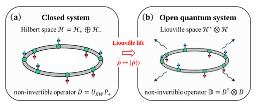
<figcaption class="paper-figure-caption"><b>Fig 1.</b> FIG. 1. Liouville-space extension of Kramers–Wannier non- invertible symmetry. (a) The periodic TFIM with non- invertible operator D. (b) The corresponding open-system construction, in which the closed-system non-invertible oper- ator is lifted to Liouville space and the outward arrows indi- cate dissipation into the environment.</figcaption>
</figure>
<figure class="paper-figure-card">
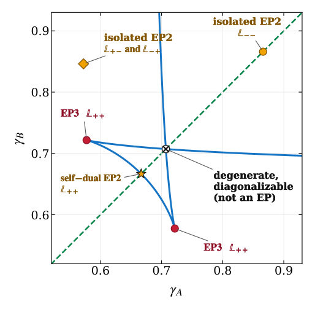
<figcaption class="paper-figure-caption"><b>Fig 2.</b> FIG. 3. Exceptional-degeneracy structure of the periodic N = 3 Liouvillian at g = 1. The blue curves denote the zero- discriminant set of the nonstationary block in L++. Generic points on these curves are EP2s. The red circles mark EP3s, and the black cross marks a semisimple degeneracy. The green dashed line denotes the self-dual condition γA = γB, whose unique intersection with the EP2 locus in L++ is marked by the yellow star at (γA, γB) = (2/3, 2/3). The yellow diamond marks an isolated EP2 shared by L+−and L−+, while the yellow circle marks an isolated EP2 in L−−.</figcaption>
</figure>
<figure class="paper-figure-card">
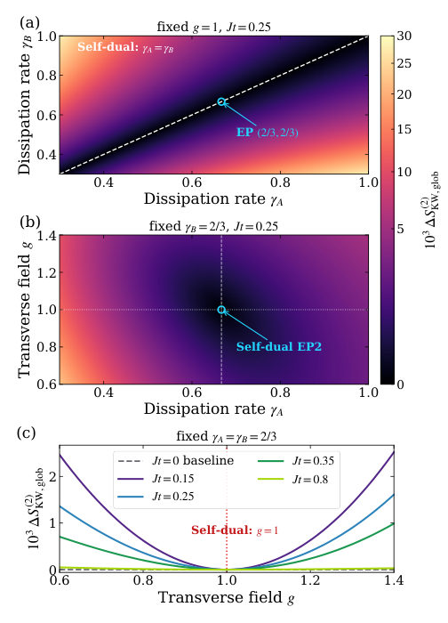
<figcaption class="paper-figure-caption"><b>Fig 3.</b> FIG. 2. Global second-Rényi KW asymmetry for the periodic N = 3 chain, starting from the fixed state ρ0. (a) Rate plane at g = 1 and Jt = 0.25. The dashed line denotes γA = γB, and the cyan circle marks the EP at (2/3, 2/3) in L++. (b) Field–rate plane at γB = 2/3 and Jt = 0.25. The dotted guides meet at (γA, g) = (2/3, 1). (c) Field scans at γA = γB = 2/3 for the indicated times. Panels (a) and (b) use a power-law color normalization with exponent 0.45. The colorbar gives the untransformed 103∆S(2) KW,glob.</figcaption>
</figure>
</div>

<p><strong>Summary.</strong> This paper extends the concept of non-invertible symmetries to open quantum systems by formulating a Liouville-space duality framework. Applying this to the Ising chain, the authors show that the symmetry imposes strict selection rules on the Liouvillian's spectral structure. This allows for the precise identification and characterization of self-dual exceptional points in the dynamics.</p>
<p><strong>Why it may be interesting.</strong> This work provides a powerful, symmetry-based tool to analyze non-Hermitian quantum dynamics (open systems), which is crucial for understanding dissipation and non-equilibrium steady states in condensed matter and quantum optics.</p>
<details>
<summary>Detailed structure</summary>
<p><strong>Main problem.</strong> The paper develops a general framework for non-invertible symmetries in open quantum systems, extending known dualities from Hilbert space to the Liouville space formalism.</p>
<p><strong>Main result.</strong> It establishes a Liouville-space duality relation for the open system dynamics and derives a momentum-resolved selection rule for Liouvillian Jordan blocks, distinguishing between semisimple degeneracies and self-dual exceptional points.</p>
<p><strong>Method.</strong> The authors utilize a Liouville-space duality framework, applying Kramers-Wannier (KW) duality to the periodic transverse-field Ising chain to analyze the constraints imposed by non-invertible symmetries on the spectral structure.</p>
<p><strong>Model / system.</strong> The model is the periodic transverse-field Ising chain undergoing Markovian dynamics governed by a Lindblad master equation. The analysis focuses on the Liouvillian superoperator and its symmetries.</p>
<p><strong>Key observables.</strong> Liouvillian spectrum, exceptional points (EPs), the global Rényi-2 KW asymmetry ($\Delta S^{(2)}_{KW,glob}$), and the structure of Jordan blocks.</p>
<p><strong>Important parameters / regimes.</strong> The system parameters include coupling constants ($J, g$) and dissipation rates ($\gamma_A, \gamma_B$). Self-duality is achieved when $J=g$ and $\gamma_A = \gamma_B$.</p>
<p><strong>Assumptions / limitations.</strong> The analysis is restricted to Markovian dynamics governed by the Lindblad equation, and the framework relies on the existence of a general Liouville-space duality.</p>
<p><strong>Figures summary.</strong> Figures illustrate the Liouville-space extension of KW symmetry, the vanishing of the global second-Rényi KW asymmetry at self-dual points, and the mapping of exceptional degeneracies in parameter space.</p>
<p><strong>Paper structure.</strong> The paper first formulates the Liouville-space duality, then applies it to the TFIM using KW duality, analyzing the resulting symmetry constraints on the Liouvillian Jordan structure, culminating in a detailed spectral analysis of the reduced dynamics at the self-dual point.</p>
</details>
<details>
<summary>Abstract</summary>
<p>Non-invertible symmetries extend conventional symmetries beyond group-like transformations and play an important role in quantum field theory and many-body physics. However, a general framework of non-invertible symmetries in open quantum systems is still lacking. Here, we formulate a general Liouville-space duality framework that extends Hilbert-space non-invertible dualities to open quantum systems. The resulting defect relates Liouvillians with dual Hamiltonian and dissipative parameters and becomes an exact symmetry at self-duality. We apply this framework to the periodic transverse-field Ising chain with two collective Lindblad channels exchanged by Kramers--Wannier (KW) duality. A strong $\mathbb{Z}_2$ symmetry divides Liouville space into four parity sectors, while the defect acts nontrivially only in the even-even sector. At self-duality, the KW defect imposes a momentum-resolved selection rule on Liouvillian Jordan blocks. Modes with different Liouville momenta or KW-defect eigenvalues cannot form a common exceptional Jordan block. For a three-site chain, a global Rényi-2 KW asymmetry dynamically identifies the self-dual conditions. At the same time, the spectral structure exhibits both a semisimple degeneracy and a self-dual exceptional point with a perturbation-selective response. These results extend non-invertible dualities to Markovian quantum dynamics and establish a symmetry-based selection rule for Liouvillian Jordan structures.</p>
</details>
<p><sub><a href="#top">↑ back to top</a></sub></p>

<p><a id="paper-2610.22501"></a></p>
<h3 id="entropy-production-and-thermalization-in-heavy-quark-langevin-dynamics"><a href="http://arxiv.org/abs/2610.22501v1">Entropy Production and Thermalization in Heavy-Quark Langevin Dynamics</a></h3>
<p><strong>Authors:</strong> A. M. Silva<br>
<strong>Type:</strong> theory · <strong>Category:</strong> statistical mechanics · <strong>PDF:</strong> <a href="https://arxiv.org/pdf/2610.22501v1">https://arxiv.org/pdf/2610.22501v1</a><br>
<strong>Analysis basis:</strong> full PDF text, analyzed in chunks
<strong>Topic relevance:</strong> <code>Keldysh / 2PI / non-Gaussian methods</code> <strong>3/5</strong> · <code>methods for driven-dissipative</code> <strong>3/5</strong> · <code>non-equilibrium universality</code> <strong>3/5</strong> · <code>correlated / nonlocal dissipation</code> <strong>1/5</strong> · <code>driven-dissipative phase transition</code> <strong>1/5</strong> · <code>quantum measurements</code> <strong>1/5</strong> · <code>scars &amp; prethermalization</code> <strong>1/5</strong></p>
<div class="figure-strip-hint">↔ Scroll figures horizontally</div>
<div class="paper-figures-scroll">
<figure class="paper-figure-card">
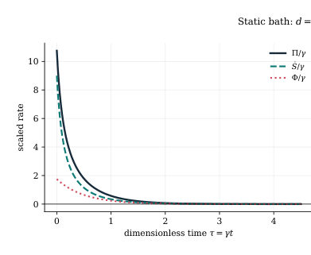
<figcaption class="paper-figure-caption"><b>Fig 1.</b> Figure 1: Static-bath entropy balance for d = 3, initial scaled variance x0 = 0.25, and scaled mean momentum r2 0 = 4. Left: entropy production, system entropy rate, and entropy flux. Right: relative entropy and integrated entropy production. Equation (25) implies that the two curves on the right sum to the constant H(0).</figcaption>
</figure>
<figure class="paper-figure-card">
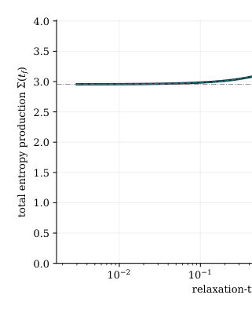
<figcaption class="paper-figure-caption"><b>Fig 2.</b> Figure 2: Total production of the driven Gaussian benchmark in the Bjorken temperature protocol as a function of the relaxation-time ratio ϵ = 1/[γ(0)τ0], for d = 3, x0 = 0.25, r2 0 = 4, and T0/Tc = 0.40/0.155. Dashed: strong-coupling limit, Eq. (40). Dotted: weak- coupling limit, Eq. (41). The dash-dotted line marks H(0).</figcaption>
</figure>
<figure class="paper-figure-card">
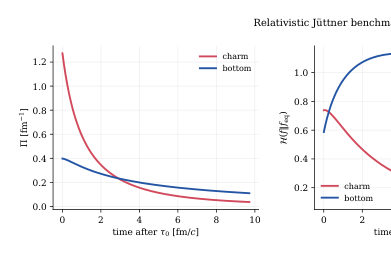
<figcaption class="paper-figure-caption"><b>Fig 3.</b> Figure 3: Relativistic charm and bottom evolution for cD = 4 in the temperature-only Bjorken protocol. From left to right: instantaneous entropy production, relative entropy to the instantaneous Jüttner state, and accumulated production.</figcaption>
</figure>
<figure class="paper-figure-card">
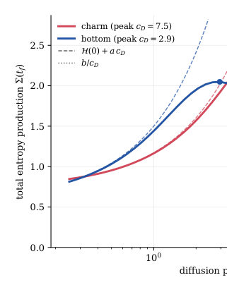
<figcaption class="paper-figure-caption"><b>Fig 4.</b> Figure 4: Total relativistic entropy production at tf over 0.25 ≤cD ≤100. Dashed curves show the strong-coupling limit H(0)+a cD and dotted curves the weak-coupling limit b/cD, with the coefficients of Table 2. Both charm and bottom have an interior maximum.</figcaption>
</figure>
</div>

<p><strong>Summary.</strong> This work investigates how heavy quarks thermalize in a cooling quark-gluon plasma by analyzing the irreversible entropy production. Using Langevin dynamics, the authors derive the entropy balance equation and find that the total entropy production peaks at intermediate coupling strengths. This provides crucial theoretical insights into the non-equilibrium transport properties of heavy quarks in QCD matter.</p>
<p><strong>Why it may be interesting.</strong> The rigorous application of entropy balance principles to non-equilibrium transport in a hot, dense medium provides a strong theoretical framework applicable to open quantum systems far from equilibrium.</p>
<details>
<summary>Detailed structure</summary>
<p><strong>Main problem.</strong> The paper analyzes the irreversible entropy balance and thermalization process of heavy quarks moving through a cooling quark-gluon plasma (QGP).</p>
<p><strong>Main result.</strong> The total entropy production exhibits a maximum at intermediate coupling strengths, and closed-form expressions for the production are derived for both strong and weak coupling limits.</p>
<p><strong>Method.</strong> The authors use the Langevin and Fokker-Planck formalisms to derive and analyze the entropy balance equation, separating production into distinct contributions.</p>
<p><strong>Model / system.</strong> The system models heavy quarks as Brownian probes interacting with a thermalizing, expanding QGP bath, analyzed using both nonrelativistic and relativistic descriptions.</p>
<p><strong>Key observables.</strong> Entropy production rate ($\Pi$), Relative entropy ($KL[f||f_{eq}]$), Total entropy production ($\Sigma(t_f)$).</p>
<p><strong>Important parameters / regimes.</strong> Coupling strength ($c_D$), Relaxation time ($ au$), Temperature protocol (Bjorken expansion).</p>
<p><strong>Assumptions / limitations.</strong> The analysis is restricted to the classical single-particle momentum density entropy and assumes a Markovian process.</p>
<p><strong>Figures summary.</strong> Figures illustrate the static-bath entropy balance, the comparison of asymptotic limits (strong/weak coupling) to the exact solution for total entropy production, and the time evolution of entropy for charm and bottom quarks.</p>
<p><strong>Paper structure.</strong> The paper develops from the general entropy balance formalism for a static bath to the driven case of a cooling QGP, deriving closed-form limits and numerically verifying the results for different heavy quark species.</p>
</details>
<details>
<summary>Abstract</summary>
<p>Heavy quarks are often treated as Brownian probes of the quark-gluon plasma. We formulate the irreversible entropy balance of their momentum distribution and separate the production generated by collisions from the driving caused by an evolving medium. For linear dynamics the production splits into two positive contributions, from directed momentum and from the momentum width. A static bath obeys an exact H-theorem. A cooling bath adds an explicit driving term, and longitudinal Bjorken expansion enters as a separate kinematic drive rather than as collisional production. For a Bjorken temperature protocol we derive closed-form strong- and weak-coupling limits of the total production. At strong coupling it exceeds the initial relative entropy by a term linear in the relaxation time, whose quasistatic part has the thermodynamic-length form. At weak coupling it vanishes inversely with the relaxation time. A positive strong-coupling slope therefore guarantees maximal dissipation at intermediate coupling. The same structure holds for a relativistic Fokker-Planck equation with a Jüttner stationary state, solved numerically for charm and bottom quarks under the temperature protocol. Linear-response coefficients computed from the static generator reproduce both limits, and the numerical entropy balance is satisfied to high accuracy.</p>
</details>
<p><sub><a href="#top">↑ back to top</a></sub></p>

<p><a id="paper-2610.23784"></a></p>
<h3 id="anti-synchronized-collective-rotation-in-magnetic-colloidal-particles-under-rotating-magnetic-fields"><a href="http://arxiv.org/abs/2610.23784v1">Anti-synchronized collective rotation in magnetic colloidal particles under rotating magnetic fields</a></h3>
<p><strong>Authors:</strong> Adithya Bharath, A. V. Anil Kumar<br>
<strong>Type:</strong> theory · <strong>Category:</strong> statistical mechanics · <strong>PDF:</strong> <a href="https://arxiv.org/pdf/2610.23784v1">https://arxiv.org/pdf/2610.23784v1</a><br>
<strong>Analysis basis:</strong> full PDF text, analyzed in chunks
<strong>Topic relevance:</strong> <code>driven-dissipative phase transition</code> <strong>3/5</strong> · <code>non-equilibrium universality</code> <strong>3/5</strong> · <code>methods for driven-dissipative</code> <strong>2/5</strong> · <code>Frenkel-Kontorova</code> <strong>1/5</strong> · <code>Keldysh / 2PI / non-Gaussian methods</code> <strong>1/5</strong> · <code>analog quantum simulation</code> <strong>1/5</strong> · <code>correlated / nonlocal dissipation</code> <strong>1/5</strong></p>
<div class="figure-strip-hint">↔ Scroll figures horizontally</div>
<div class="paper-figures-scroll">
<figure class="paper-figure-card">
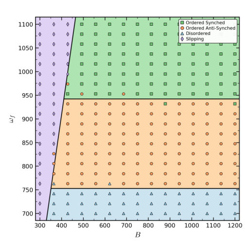
<figcaption class="paper-figure-caption"><b>Fig 1.</b> FIG. 1. Phase diagram of magnetic colloids subjected to a rotating magnetic field in the (B, ωf) plane. Four dynami- cal regimes are identified: disordered, anti-synchronized, syn- chronized, and slipping. Structural order is determined from the hexatic correlation length, while the rotational state is classified from the sign of the crystalline-core angular veloc- ity, Ωcore and the synchronization parameter, α. Parameters: N = 448, timestep ∆t = 6 × 10−6, µ = 7.</figcaption>
</figure>
<figure class="paper-figure-card">
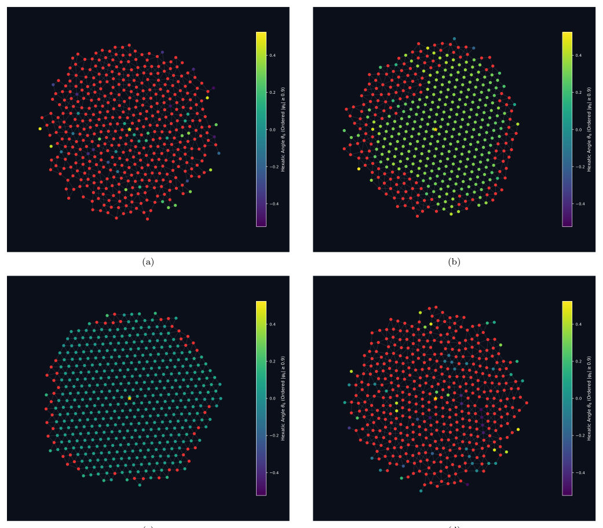
<figcaption class="paper-figure-caption"><b>Fig 2.</b> FIG. 2. Snapshots of the four dynamical regimes for the magnetic colloidal particles under a rotating magnetic field. (a) Disordered phase: B=1020, ωf = 300. (b) Anti-synchronized phase: B=1200, ωf = 903. (c) Synchronized phase: B=1200, ωf = 1850. (d) Slipping phase: B=480, ωf = 2200. The red particles have |ψ6| &lt; 0.90, The colored particles are colored by their local ψ6 orientation angle.</figcaption>
</figure>
<figure class="paper-figure-card">
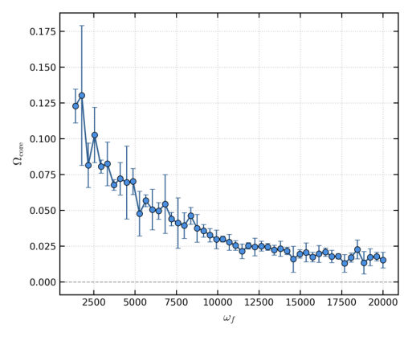
<figcaption class="paper-figure-caption"><b>Fig 3.</b> FIG. 3. Decay of core angular velocity with frequency.Each data point is averaged over 5 simulations of random initial conditions. The error bars shows the standard deviation of the mean angular velocities from these 5 simulations.To account for high frequencies we used a smaller time step of dt=2 × 10−6.</figcaption>
</figure>
<figure class="paper-figure-card">
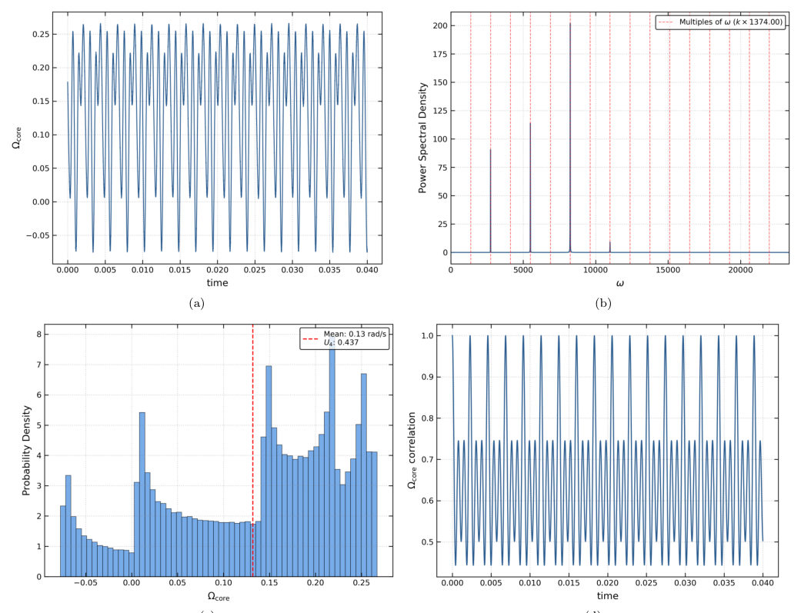
<figcaption class="paper-figure-caption"><b>Fig 4.</b> FIG. 4. The results are from a cluster at ωf = 1374, B = 1200 showing rotation in synchronized phase.(a) Instantaneous angular velocity of the core as a function of time. (b) Normalized frequency spectrum of the angular velocity. (c) Probability distribution function of the angular velocity. (d) Normalized time correlation function of the angular velocity. Note that all the plots are representative, The waveform of angular velocity can show diverse modes of rotation.</figcaption>
</figure>
<figure class="paper-figure-card">
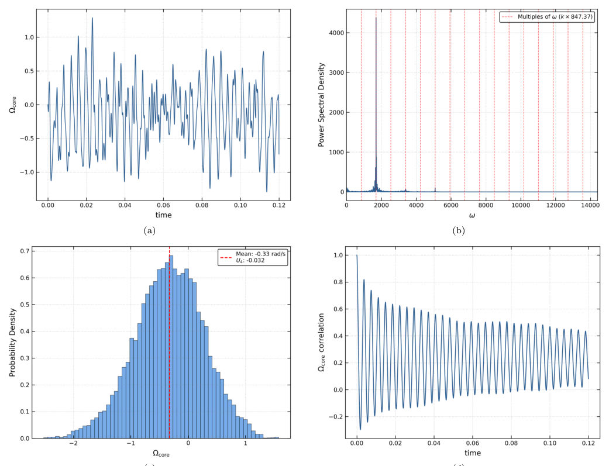
<figcaption class="paper-figure-caption"><b>Fig 5.</b> FIG. 5. The results are from simulations run at ωf = 847, B = 1200 showing rotation in anti-synchronized phase.(a)Instantaneous angular velocity of the core as a function of time. (b) Normalized frequency spectrum of the an- gular velocity. (c) Probability distribution function of the angular velocity. (d) Normalized time correlation function of the angular velocity. Note that all the plots are representative, The waveform of angular velocity can show diverse modes of rotation.</figcaption>
</figure>
</div>

<p><strong>Summary.</strong> This work analyzes the collective rotation of magnetic colloidal particles under a rotating magnetic field, discovering a unique 'anti-synchronized' state. In this state, the particle cluster's core rotates opposite to the external drive due to a breakdown in torque compensation. The transition into and out of this state is characterized as a first-order, history-dependent dynamical transition.</p>
<p><strong>Why it may be interesting.</strong> The study provides a detailed, non-equilibrium mechanical analogy for understanding how local energy dissipation and spatial redistribution of interaction forces can drive macroscopic, counter-intuitive collective behaviors, relevant to driven many-body systems.</p>
<details>
<summary>Detailed structure</summary>
<p><strong>Main problem.</strong> The study investigates the emergence of anti-synchronized collective rotation in a cluster of interacting magnetic colloidal particles subjected to a rotating external magnetic field.</p>
<p><strong>Main result.</strong> The system can enter a distinct non-equilibrium state where the crystalline core rotates opposite to the applied field, which is fundamentally linked to a reorganization of interaction torques and core-surface rotational decoupling.</p>
<p><strong>Method.</strong> The dynamics are modeled using overdamped Langevin equations incorporating steric and dipole-dipole interactions, analyzed via structural, spectral, and torque analyses.</p>
<p><strong>Model / system.</strong> The system consists of a two-dimensional cluster of magnetic colloidal particles whose motion is governed by the interplay of WCA repulsion, dipole-dipole forces, and an external rotating magnetic field.</p>
<p><strong>Key observables.</strong> Core angular velocity ($\Omega_{	ext{core}}$), synchronization parameter ($\alpha$), hexatic order parameter ($\Psi_6$), and net interaction torque.</p>
<p><strong>Important parameters / regimes.</strong> Driving frequency ($\omega_f$), dipolar coupling strength ($\mu$), and the ratio of steric to dipolar torques.</p>
<p><strong>Assumptions / limitations.</strong> The dynamics are treated using overdamped Langevin equations, and the analysis relies on decomposing the total torque into contributions from different interaction types.</p>
<p><strong>Figures summary.</strong> Figures illustrate the transition between dynamical regimes (Disordered, Anti-synchronized, Synchronized) and show the hysteretic dependence of the core angular velocity on the driving frequency, confirming a first-order-like transition.</p>
<p><strong>Paper structure.</strong> The paper establishes the physical model and equations of motion, analyzes the different rotational regimes (synchronized vs. anti-synchronized) using torque balances, and concludes by characterizing the transition between these states as a first-order dynamical transition.</p>
</details>
<details>
<summary>Abstract</summary>
<p>Collective synchronization is a common response of interacting magnetic particles subjected to rotating external fields. Here we demonstrate a distinct nonequilibrium state in a two-dimensional cluster of magnetic colloidal particles in which the ordered crystalline core rotates, on average, opposite to the direction of the applied rotating magnetic field, while the defect-rich outer region continues to rotate with the drive. We term this state anti-synchronized collective rotation. By combining structural, spectral, bond-resolved, and layer-resolved torque analyses, we show that anti-synchronization is associated with a broader defect-rich interface, enhanced and dynamically heterogeneous bond deformation, and a reorganization of torque transmission between the surface and the crystalline interior. In the synchronized state, steric torques compensate the opposing dipolar contribution in the outer core, maintaining a positive net interaction torque. In the anti-synchronized state this compensation becomes insufficient, producing a negative net torque in theouter core and enabling core-surface rotational decoupling. Increasing the driving frequency restores coherent rotation through a transition characterized by competing positive- and negative-angular-velocity populations and hysteresis, consistent with a discontinuous, first-order-like dynamical transition. These results demonstrate how deformation and spatial redistribution of interaction torques can generate counter-rotating collective states in driven colloidal matter.</p>
</details>
<p><sub><a href="#top">↑ back to top</a></sub></p>

<p><a id="paper-2610.23442"></a></p>
<h3 id="regularization-of-stochastic-fluid-dynamics-and-non-perturbative-renormalization-of-the-shear-viscosity-of-incompressible-fluids"><a href="http://arxiv.org/abs/2610.23442v1">Regularization of stochastic fluid dynamics and non-perturbative renormalization of the shear viscosity of incompressible fluids</a></h3>
<p><strong>Authors:</strong> Mattis Harhoff, Cedric Riedel, Johannes Roth, Sören Schlichting<br>
<strong>Type:</strong> theory · <strong>Category:</strong> statistical mechanics · <strong>PDF:</strong> <a href="https://arxiv.org/pdf/2610.23442v1">https://arxiv.org/pdf/2610.23442v1</a><br>
<strong>Analysis basis:</strong> full PDF text, analyzed in chunks
<strong>Topic relevance:</strong> <code>Keldysh / 2PI / non-Gaussian methods</code> <strong>3/5</strong> · <code>driven-dissipative phase transition</code> <strong>2/5</strong> · <code>methods for driven-dissipative</code> <strong>2/5</strong> · <code>non-equilibrium universality</code> <strong>2/5</strong> · <code>analog quantum simulation</code> <strong>1/5</strong> · <code>correlated / nonlocal dissipation</code> <strong>1/5</strong> · <code>quantum measurements</code> <strong>1/5</strong></p>
<div class="figure-strip-hint">↔ Scroll figures horizontally</div>
<div class="paper-figures-scroll">
<figure class="paper-figure-card">
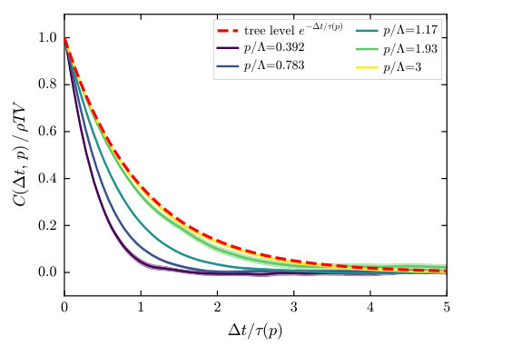
<figcaption class="paper-figure-caption"><b>Fig 1.</b> FIG. 1. Unequal-time correlation function C(∆t, p) of the transverse momentum density for a two-dimensional incom- pressible fluid extracted from direct numerical simulations with N = 48, Re−1 Λ = 0.1, Λa = 0.333. The axes are nor- malized to the thermal equilibrium value and the tree-level autocorrelation time per p, respectively. The red dashed curve shows the tree-level result.</figcaption>
</figure>
<figure class="paper-figure-card">
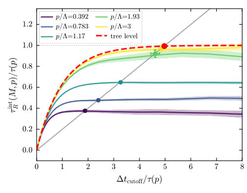
<figcaption class="paper-figure-caption"><b>Fig 2.</b> FIG. 2. Running estimate τ int R (M, p)/τ(p) of the inte- grated autocorrelation time as a function of the window size ∆tcutoff/τ(p) for the correlation functions in Fig. 1, with shaded bands indicating statistical uncertainties and the red dashed curve showing the tree-level result. The extracted values τ int R (p) (points with error bars) are given by the inter- sections with the grey line of slope 1/c (c = 5), where the Madras–Sokal criterion (93) is first fulfilled.</figcaption>
</figure>
<figure class="paper-figure-card">
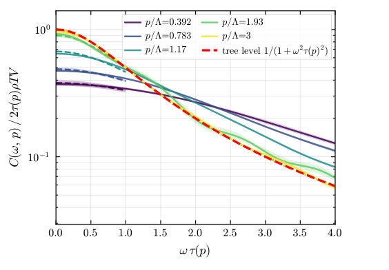
<figcaption class="paper-figure-caption"><b>Fig 3.</b> FIG. 3. Extraction of the relaxation time τ FT R (p) from a fit of the Fourier-space correlation function C(ω, p)/[2τ(p)ρTV ] as a function of ωτ(p). The red dashed curve shows the tree- level result, Eq. (88). Dashed lines with shaded bands show fits to a Lorentzian as described in the main text.</figcaption>
</figure>
<figure class="paper-figure-card">
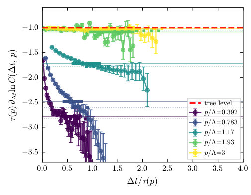
<figcaption class="paper-figure-caption"><b>Fig 4.</b> FIG. 4. Logarithmic derivative τ(p) ∂∆t ln C(∆t, p) as a function of ∆t/τ(p) for the correlation functions in Fig. 1. At tree level, it equals −1 (red dashed line). Solid (dot- ted) horizontal lines show the fit values −τ(p)/τ exp R (p) = −ηexp R (p)/η obtained in the self-consistently determined win- dows [τ exp R , 2τ exp R ] ([1.5τ exp R , 2.5τ exp R ]). The steep drop at late times signals the first zero crossing of C(∆t, p) due to limited statistics.</figcaption>
</figure>
<figure class="paper-figure-card">
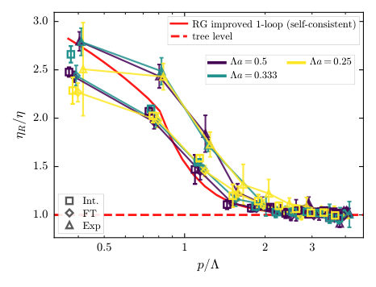
<figcaption class="paper-figure-caption"><b>Fig 5.</b> FIG. 5. Renormalized shear viscosity ηR(p)/η of a two- dimensional fluid at Re−1 Λ = 0.1 and fixed ΛL = 16, for differ- ent lattice spacings. Symbols denote the extraction method. The solid red line shows the self-consistent RG improved re- sult of Sec. III A, and the dashed red line the bare viscosity.</figcaption>
</figure>
</div>

<p><strong>Summary.</strong> This work develops a mathematically consistent regularization scheme for stochastic fluid dynamics, allowing for the calculation of transport properties like shear viscosity. By treating the system as an Effective Field Theory, the authors use renormalization group techniques to calculate the viscosity, successfully bridging the gap between continuum field theory and numerical lattice simulations.</p>
<p><strong>Why it may be interesting.</strong> While focused on classical fluid dynamics, the rigorous application of EFT techniques, renormalization group flow, and the need to reconcile continuum limits with lattice discretizations are highly relevant methodologies used in analyzing open quantum systems and many-body dynamics.</p>
<details>
<summary>Detailed structure</summary>
<p><strong>Main problem.</strong> The paper addresses the regularization of stochastic fluid dynamics to ensure the theory is UV finite and admits a well-defined continuum limit for calculating transport coefficients.</p>
<p><strong>Main result.</strong> The authors successfully perform renormalization group improved perturbative calculations of the shear viscosity ($\eta$) in 2D and 3D, showing agreement between continuum field theory and lattice simulations.</p>
<p><strong>Method.</strong> The approach involves proposing a symmetry-preserving regularization scheme for the stochastic Navier-Stokes equations, followed by applying functional methods like the Martin-Siggia-Rose-Janssen-De Dominicis formalism for renormalization group analysis.</p>
<p><strong>Model / system.</strong> The system is an incompressible fluid whose dynamics are governed by stochastic Navier-Stokes equations, treated as an Effective Field Theory (EFT) matching a microscopic quantum field theory.</p>
<p><strong>Key observables.</strong> Shear viscosity ($\eta$), renormalized viscosity ($\eta_R$), and the stationary probability distribution $p_{eq}[\vec{\pi}]$.</p>
<p><strong>Important parameters / regimes.</strong> UV cutoff ($\Lambda$), lattice spacing ($a$), and the inverse thermal Reynolds number ($Re^{-1}_\Lambda$).</p>
<p><strong>Assumptions / limitations.</strong> The theory relies on the validity of the Poisson bracket formalism and assumes that the proposed regularization scheme correctly preserves all relevant symmetries and fluctuation-dissipation relations.</p>
<p><strong>Figures summary.</strong> Figures illustrate the EFT structure with a cutoff separating microscopic (UV) and macroscopic (IR) scales, and show the dependence of the renormalized viscosity on the cutoff scale in 3D.</p>
<p><strong>Paper structure.</strong> The paper introduces the stochastic hydrodynamics formalism, derives the necessary symmetries and conservation laws, develops the regularization scheme, performs the RG calculations for $\eta$, and finally compares the continuum results with lattice simulations.</p>
</details>
<details>
<summary>Abstract</summary>
<p>We propose a regularization of stochastic fluid dynamics that preserves all relevant symmetries. By considering an incompressible fluid, we demonstrate explicitly that the regularized theory is UV finite, and therefore admits a continuum limit. Strikingly, the regularized theory of stochastic fluid dynamics is not only amenable to direct numerical simulations of the lattice discretized theory, but also to functional methods in the continuum. We exploit this to perform renormalization group improved perturbative calculations of the renormalization of the shear viscosity of an incompressible fluid in two and three spatial dimensions, and compare our results to direct numerical simulations of the lattice discretized theory.</p>
</details>
<p><sub><a href="#top">↑ back to top</a></sub></p>

<p><a id="paper-2610.23314"></a></p>
<h3 id="interfacial-faraday-instability-driven-by-interspecies-interaction-modulation-in-a-phase-separated-binary-bose-einstein-condensate"><a href="http://arxiv.org/abs/2610.23314v1">Interfacial Faraday instability driven by interspecies-interaction modulation in a phase-separated binary Bose-Einstein condensate</a></h3>
<p><strong>Authors:</strong> Yating Huang, Yan Li<br>
<strong>Type:</strong> theory · <strong>Category:</strong> quantum gases · <strong>PDF:</strong> <a href="https://arxiv.org/pdf/2610.23314v1">https://arxiv.org/pdf/2610.23314v1</a><br>
<strong>Analysis basis:</strong> full PDF text, analyzed in chunks
<strong>Topic relevance:</strong> <code>analog quantum simulation</code> <strong>3/5</strong> · <code>driven-dissipative phase transition</code> <strong>3/5</strong> · <code>methods for driven-dissipative</code> <strong>2/5</strong> · <code>non-equilibrium universality</code> <strong>2/5</strong> · <code>Keldysh / 2PI / non-Gaussian methods</code> <strong>1/5</strong></p>
<div class="figure-strip-hint">↔ Scroll figures horizontally</div>
<div class="paper-figures-scroll">
<figure class="paper-figure-card">
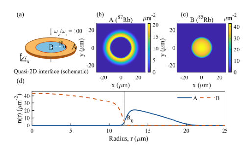
<figcaption class="paper-figure-caption"><b>Fig 1.</b> FIG. 1. Equilibrium interface and density distributions in a phase-separated quasi-2D binary BEC. (a) Schematic of the disk–annulus configuration, with component B occupying the central disk and component A the surrounding annulus. Their common boundary is the internal A–B interface. (b,c) Equilibrium 2D density distributions of components A (87Rb) and B (85Rb), respectively, obtained from the stationary GP equations. (d) Radial density profiles nA(r) (blue solid line) and nB(r) (orange dashed line). The vertical dotted line marks the equilibrium interface radius R0.</figcaption>
</figure>
<figure class="paper-figure-card">
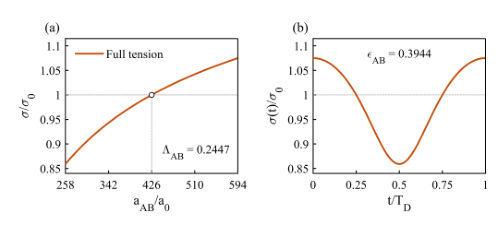
<figcaption class="paper-figure-caption"><b>Fig 2.</b> FIG. 2. Interaction dependence and periodic modulation of the interfacial tension. (a) Normalized interfacial tension σ/σ0 as a function of the interspecies scattering length aAB. The open circle marks the reference point aAB = 426a0, where the loga- rithmic tension sensitivity is ΛAB = 0.2447. (b) Normalized interfacial tension σ(t)/σ0 over one driving period TD for a relative modulation amplitude ϵAB = 168/426 ≃0.3944. Both curves are calculated using the unexpanded tension function at fixed reference pressure and healing lengths.</figcaption>
</figure>
<figure class="paper-figure-card">
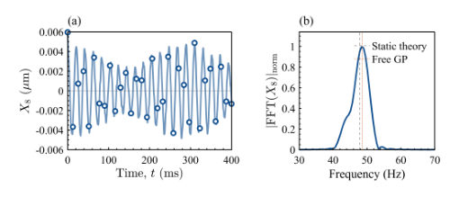
<figcaption class="paper-figure-caption"><b>Fig 3.</b> FIG. 3. Free oscillation of the eightfold interface mode at con- stant aAB = 426a0. (a) Phase-sensitive eightfold interface dis- placement X8(t) obtained from the GP evolution. (b) Fourier amplitude spectrum normalized by its maximum. The gray dashed line marks the capillary prediction f8 = 47.8757 Hz, and the orange dotted line marks the frequency obtained from the free GP oscillation, 48.56 Hz.</figcaption>
</figure>
<figure class="paper-figure-card">
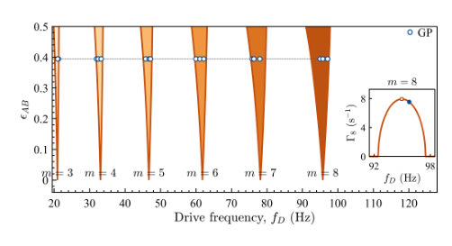
<figcaption class="paper-figure-caption"><b>Fig 4.</b> FIG. 4. Primary Floquet instability tongues for interfacial modes m = 3–8, plotted against driving frequency fD and relative modulation amplitude ϵAB of aAB. The orange regions show the predictions of the capillary model. Open circles mark GP driving parameters at ϵAB = 168/426. The inset shows the theoretical Floquet amplitude growth rate Γ8 as a function of fD at ϵAB = 168/426 ≃0.3944. The open square marks its maximum, and the filled circle marks its value at fD = 95.7513 Hz.</figcaption>
</figure>
<figure class="paper-figure-card">
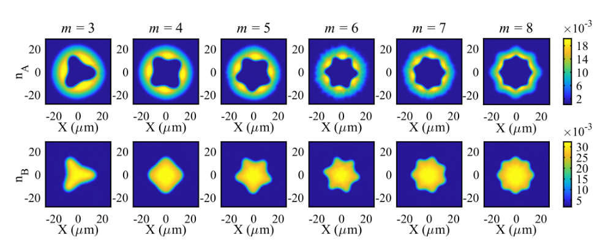
<figcaption class="paper-figure-caption"><b>Fig 5.</b> FIG. 5. Star-shaped deformations of the internal A–B interface with azimuthal orders m = 3–8. The driving frequencies from left to right are fD = 21.19, 32.46, 47.15, 62.20, 78.59, 97.16 Hz. All snapshots use the reference scattering length aAB = 426a0 and modulation amplitude ∆aAB = 168a0. The two components exhibit complementary deformations of their common internal interface.</figcaption>
</figure>
</div>

<p><strong>Summary.</strong> This paper analyzes how modulating the interspecies interaction in a phase-separated binary BEC drives interfacial Faraday instabilities. By combining theoretical Floquet analysis with full Gross-Pitaevskii simulations, the authors predict specific resonance conditions for exciting capillary modes. The key finding is the demonstration of preferential, exponentially growing excitation of the eightfold interface pattern, offering a route for frequency-selective control over quantum fluid interfaces.</p>
<p><strong>Why it may be interesting.</strong> This work provides a concrete, controllable mechanism (tuning interspecies interactions) to excite specific, high-order capillary modes at the interface of a quantum fluid, which is highly relevant for controlling superfluid dynamics and pattern formation in BECs.</p>
<details>
<summary>Detailed structure</summary>
<p><strong>Main problem.</strong> The study investigates interfacial Faraday instabilities in a phase-separated binary Bose-Einstein condensate (BEC) when driven by periodic modulation of the interspecies scattering length.</p>
<p><strong>Main result.</strong> The analysis predicts discrete azimuthal-mode frequencies and instability tongues, showing that the eightfold mode exhibits subharmonic oscillations and exponential growth of its amplitude, enabling frequency-selective excitation of capillary modes.</p>
<p><strong>Method.</strong> The research combines a sharp-interface capillary model with Floquet analysis to derive governing equations for the interface displacement, which are then validated and extended using full Gross-Pitaevskii (GP) simulations.</p>
<p><strong>Model / system.</strong> The system is a quasi-two-dimensional, phase-separated binary BEC (e.g., Rb-Rb) whose dynamics are governed by coupled 2D Gross-Pitaevskii equations. The driving mechanism is the time-periodic modulation of the interspecies scattering length, which modulates the interfacial tension.</p>
<p><strong>Key observables.</strong> Interfacial tension ($\sigma$), azimuthal-mode frequencies ($m=3-8$), instability tongues, and the exponential growth rate ($\Gamma_{eff}$) of the eightfold mode amplitude.</p>
<p><strong>Important parameters / regimes.</strong> Strongly immiscible regime ($K > 1$), modulation amplitude ($\epsilon_{AB}$), and the driving frequency ($\omega_D$).</p>
<p><strong>Assumptions / limitations.</strong> The analysis relies on the planar-interface approximation for the interfacial tension ($\sigma$), although full GP simulations are used to test this approximation.</p>
<p><strong>Figures summary.</strong> Figures illustrate the equilibrium density profiles and the time evolution of the normalized interfacial tension ($\sigma/\sigma_0$) under modulation. Later figures show the theoretical prediction of Floquet amplitude growth rates for the eightfold mode and the raw/averaged interface amplitudes.</p>
<p><strong>Paper structure.</strong> The paper progresses from establishing the microscopic link between scattering length modulation and time-dependent interfacial tension, to deriving the linearized Mathieu/Hill equation for interface modes, and finally performing full GP simulations to confirm parametric resonance and observe the characteristic subharmonic growth of the eightfold mode.</p>
</details>
<details>
<summary>Abstract</summary>
<p>We investigate interfacial Faraday instabilities in a quasi-two-dimensional, phase-separated binary Bose-Einstein condensate driven by periodic modulation of the interspecies scattering length. In the strongly immiscible regime, the interspecies interaction energy is concentrated near the internal interface, linking the modulation to interfacial tension and the capillary restoring force. We quantify the first-order tension response through its logarithmic sensitivity and account for nonlinear tension variations at finite modulation amplitudes. A sharp-interface capillary model and Floquet analysis yield discrete azimuthal-mode frequencies and primary instability tongues that shift toward higher driving frequencies with increasing mode order. Gross-Pitaevskii simulations reveal star-shaped interface patterns with threefold to eightfold rotational symmetry. The eightfold mode exhibits subharmonic oscillations and approximately exponential growth of its period-averaged amplitude over a small-deformation interval. These results provide a route to frequency-selective excitation of interfacial capillary modes through interspecies-interaction control.</p>
</details>
<p><sub><a href="#top">↑ back to top</a></sub></p>

<p><a id="paper-2610.23291"></a></p>
<h3 id="electrochemical-molecular-dynamics-within-the-finite-field-framework"><a href="http://arxiv.org/abs/2610.23291v1">Electrochemical Molecular Dynamics within the Finite-Field Framework</a></h3>
<p><strong>Authors:</strong> Krystof Brezina, Ludwig Ahrens-Iwers, Mariana Rossi<br>
<strong>Type:</strong> theory · <strong>Category:</strong> statistical mechanics · <strong>PDF:</strong> <a href="https://arxiv.org/pdf/2610.23291v1">https://arxiv.org/pdf/2610.23291v1</a><br>
<strong>Analysis basis:</strong> full PDF text, analyzed in chunks
<strong>Topic relevance:</strong> <code>Keldysh / 2PI / non-Gaussian methods</code> <strong>3/5</strong> · <code>methods for driven-dissipative</code> <strong>3/5</strong> · <code>quantum measurements</code> <strong>3/5</strong></p>
<div class="figure-strip-hint">↔ Scroll figures horizontally</div>
<div class="paper-figures-scroll">
<figure class="paper-figure-card">
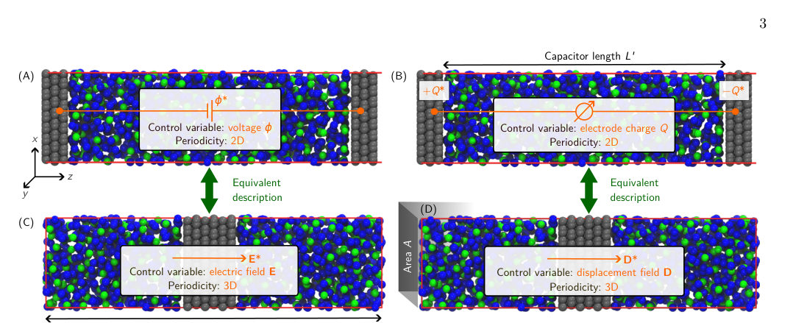
<figcaption class="paper-figure-caption"><b>Fig 1.</b> Figure 1. The possible simulation approaches for a nanoscopic electrochemical cell consisting of a coarse-grained ionic liquid electrolyte (butylmethylimidazolium hexafluorophosphate, [BMIM+][PF− 6 ], with the cation shown in blue and the anion in green) and planar graphite electrodes (carbon atoms are shown in gray). Boundaries, across which PBCs are applied, are shown in red. The lateral (z) length of the unit cell is labeled L and capacitor (plate-to-plate) length L′. In panel A, we show the closed-circuit set up consistent with the CPM. Here, the unit cell has 2D PBC in the (x, y)-directions with the electrodes facing a vacuum on the outside edges of the unit cell and the control...</figcaption>
</figure>
<figure class="paper-figure-card">
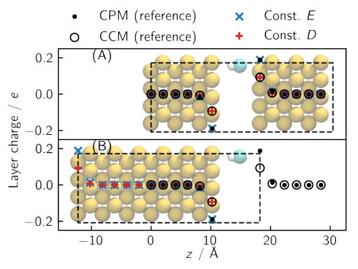
<figcaption class="paper-figure-caption"><b>Fig 2.</b> Figure 2. Equivalences of different electrostatic descrip- tions of a model HCl/Au(100) nanocapacitor. In panel A, we show the electrolyte-centered system and the charge per layer as calculated by the four methods discussed above in the text. The data shows that the CPM and the constant- E methods as well as the CCM and the constant-D meth- ods represent equivalent descriptions under their respective PBCs. In panel B, we show the same system wrapped into the conductor-centered geometry. In this case, the CPM and CCM are not applicable and both sets of black-point refer- ences are reproduced from panel A. For the constant-E and -D methods, the data shows that the finite-field description is...</figcaption>
</figure>
<figure class="paper-figure-card">
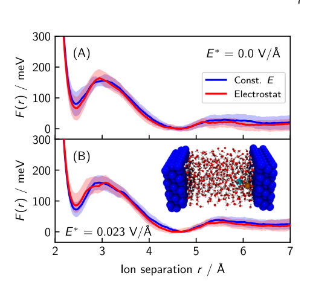
<figcaption class="paper-figure-caption"><b>Fig 3.</b> Figure 4. Helmholtz free-energy F profiles as a function of the separation r of a LiCl ion pair at the water/Pd(111) interface. Panel A: The free-energy profile obtained by the constant-E method at grounded (zero-field) conditions is shown in blue, the corresponding one obtained by the elec- trostat is shown in red. The error bars are plotted at shaded intervals behind each profile in matching color. Panel B: The same calculation as in panel A, only with a 0.023 V ˚A −1 tar- get field applied. The inset shows a snapshot of the system in which the Pd electrodes are shown in blue, oxygen atoms in red, hydrogen atoms in white, the Li+ ion in orange and the Cl−ion in turquoise. The system is...</figcaption>
</figure>
<figure class="paper-figure-card">
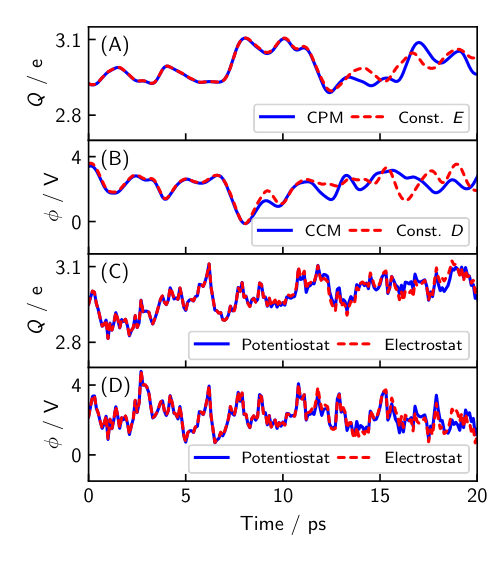
<figcaption class="paper-figure-caption"><b>Fig 4.</b> Figure 3. Equivalence of the 2D- vs 3D-PBC simulations in the [BMIM+][PF− 6 ]/graphite system (Fig. 1). Panel A com- pares the evolution of total electrode charge in a constant- potential simulation using the CPM (blue) and the constant- E method (red); both simulations started from the same ini- tial condition and the voltage drop is 2 V, which was enforced directly in CPM or by an E-field of the corresponding mag- nitude (detailed in the text). Panel B shows a similar com- parison between CCM with the charge constrained to 3 e and the constant-D method with a correspondingly strong D-field (see text). Panel C compares the charge dynamics in stochas- tic simulations where the voltage drop...</figcaption>
</figure>
<figure class="paper-figure-card">
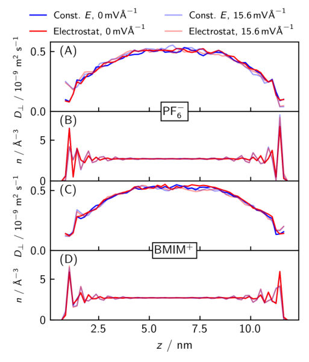
<figcaption class="paper-figure-caption"><b>Fig 5.</b> Figure 5. Diffusion coefficients D⊥for the motion in z- direction as a function of z for PF6 – (A) and BMIM+ (C) ions in a model system with an ionic liquid and graphite electrodes (cf. Fig. 1). Number-density profiles are shown in (B) and (D) for PF6 – and BMIM+, respectively. The coefficients and densities are shown for E-field of 0 and 15.6 mV ˚A −1, which were realized with constant-E and the electrostat.</figcaption>
</figure>
</div>

<p><strong>Summary.</strong> This paper introduces the 'electrostat,' a novel molecular dynamics protocol that allows for accurate simulation of electrochemical systems under constant voltage control using finite-field methods. It rigorously proves the electrostat's equivalence to established potentiostat techniques while demonstrating its computational advantages for large-scale atomistic simulations. This advances the toolkit for studying interfaces in electrochemistry.</p>
<p><strong>Why it may be interesting.</strong> The rigorous development of ensemble control methods that correctly incorporate thermal fluctuations (like a potentiostat) into computationally efficient finite-field frameworks is crucial for simulating open quantum systems and interfaces.</p>
<details>
<summary>Detailed structure</summary>
<p><strong>Main problem.</strong> The core problem is developing robust molecular dynamics simulation tools to enforce constant-voltage ($\phi^*$) conditions in electrochemical systems, especially for models beyond simple empirical metal descriptions.</p>
<p><strong>Main result.</strong> The authors propose and validate an 'electrostat' protocol, showing it is equivalent to a potentiostat and yields correct equilibrium properties for large systems, while quantifying the limits where voltage fluctuations become significant.</p>
<p><strong>Method.</strong> The work develops a theoretical framework for realizing the constant-voltage ensemble purely within finite-field simulations using a stochastic differential equation (SDE) approach.</p>
<p><strong>Model / system.</strong> The system modeled is a nanoscopic electrochemical cell, typically involving an ionic liquid electrolyte and planar electrodes (e.g., graphite). The theory generalizes standard ensembles (Constant-E, Constant-D) to incorporate voltage control.</p>
<p><strong>Key observables.</strong> Voltage ($\phi^*$), Electric Field ($E^*$), Displacement Field ($D^*$), Electrode Charge ($Q^*$), and ion-association free-energy profiles $F(r)$.</p>
<p><strong>Important parameters / regimes.</strong> System size (thousands of atoms), temperature ($T$), and the time scale separation between different control mechanisms.</p>
<p><strong>Assumptions / limitations.</strong> The framework relies on formulating the control purely within finite-field methods, and comparisons establish practical limits where the inclusion of voltage fluctuations is necessary.</p>
<p><strong>Figures summary.</strong> Figures illustrate the various simulation setups (constant V, E, D, Q) for a nanocapacitor and show benchmarks comparing the electrostat to constant-field methods, confirming equivalence for large systems.</p>
<p><strong>Paper structure.</strong> The paper develops the theory of the electrostat (Section II), benchmarks this new protocol against established methods (CPM, constant-E), and presents detailed simulations (Section III) on observables like ion association free energy and charge dynamics.</p>
</details>
<details>
<summary>Abstract</summary>
<p>Electrochemical processes at charged interfaces lie at the heart of modern technologies and their continued improvement depends on insights into the relevant atomistic processes. However, the necessary tools to impose constant-voltage conditions in molecular dynamics (MD) simulations typically directly target the electrode charge, making their extension to methods that go beyond an empirical description of metals more cumbersome. In this work, we propose an MD protocol to realize a thermodynamic ensemble in which voltage control is attained, but which is formulated purely within the framework of finite-field simulations in 3D periodic boundary conditions. We show a derivation and implementation of such a control device, which we coin an electrostat, in the ELECTRODE package within LAMMPS. Our simulations systematically benchmark the derived theory against other established approaches, for example, showing its equivalence to a potentiostat, and quantify the importance of properly accounting for ensemble fluctuations. We find that for systems of several thousands of atoms, one obtains the same equilibrium properties with the electrostat as with a simpler constant-field simulation. The difference between the two methods only manifests itself at smaller length scales, thereby establishing practical limits for the inclusion of voltage fluctuations in atomistic simulations of electrochemical systems. The strength of this framework also lies in its simplicity of extension to first-principles ab initio and reactive machine-learning potentials.</p>
</details>
<p><sub><a href="#top">↑ back to top</a></sub></p>

<p><a id="paper-2610.23165"></a></p>
<h3 id="universal-long-distance-tail-of-particle-number-density-near-a-wall-in-superfluids"><a href="http://arxiv.org/abs/2610.23165v1">Universal Long-distance Tail of Particle-number Density near a Wall in Superfluids</a></h3>
<p><strong>Authors:</strong> Keisuke Fujii<br>
<strong>Type:</strong> theory · <strong>Category:</strong> quantum gases · <strong>PDF:</strong> <a href="https://arxiv.org/pdf/2610.23165v1">https://arxiv.org/pdf/2610.23165v1</a><br>
<strong>Analysis basis:</strong> full PDF text, analyzed in chunks
<strong>Topic relevance:</strong> <code>Keldysh / 2PI / non-Gaussian methods</code> <strong>3/5</strong> · <code>analog quantum simulation</code> <strong>3/5</strong> · <code>correlated / nonlocal dissipation</code> <strong>1/5</strong> · <code>methods for driven-dissipative</code> <strong>1/5</strong> · <code>non-equilibrium universality</code> <strong>1/5</strong></p>
<div class="figure-strip-hint">↔ Scroll figures horizontally</div>
<div class="paper-figures-scroll">
<figure class="paper-figure-card">
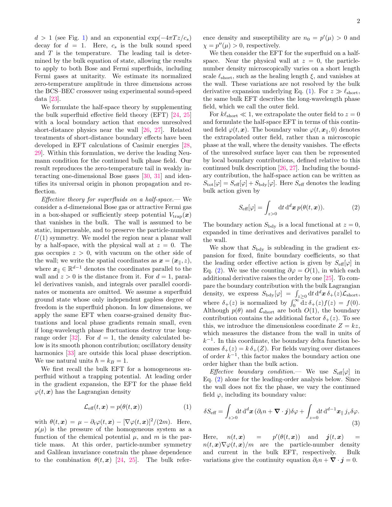
<figcaption class="paper-figure-caption"><b>Fig 1.</b> Low-resolution page preview, page 2</figcaption>
</figure>
<figure class="paper-figure-card">
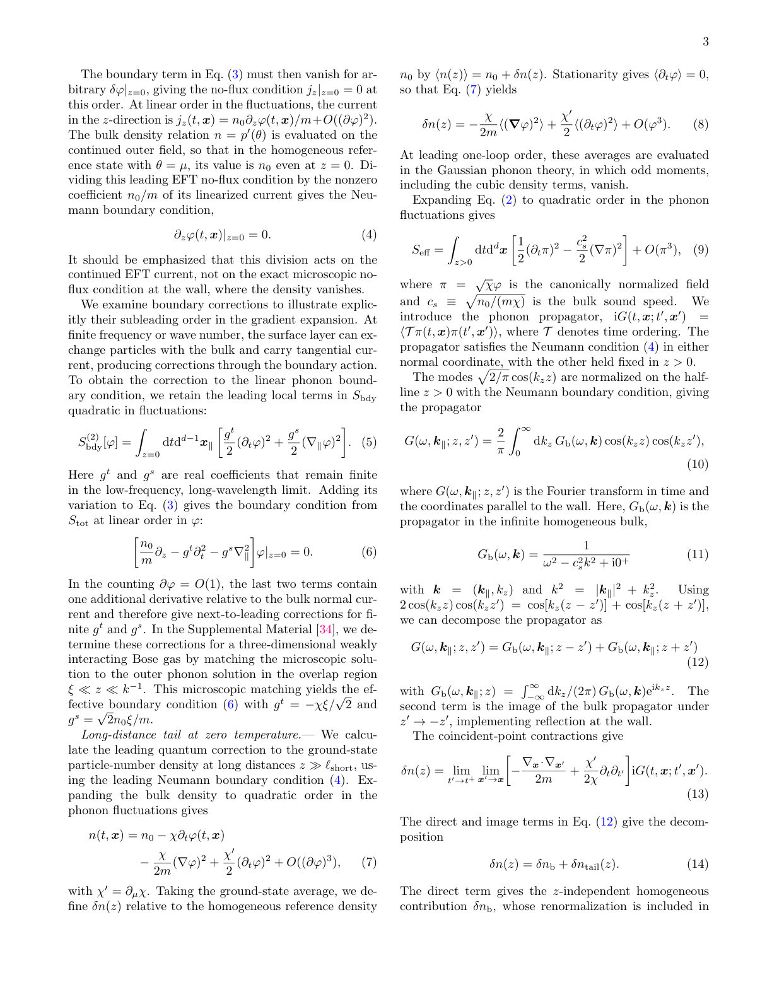
<figcaption class="paper-figure-caption"><b>Fig 2.</b> Low-resolution page preview, page 3</figcaption>
</figure>
<figure class="paper-figure-card">
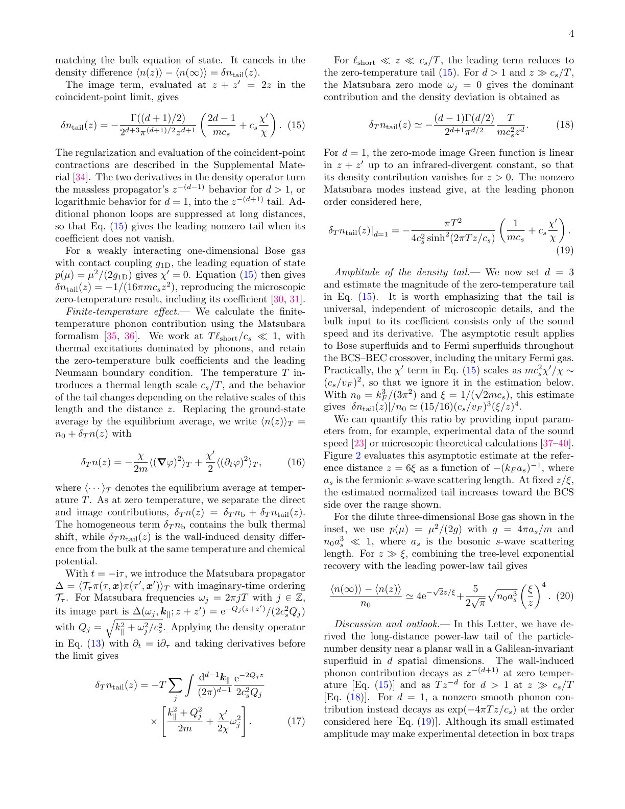
<figcaption class="paper-figure-caption"><b>Fig 3.</b> Low-resolution page preview, page 4</figcaption>
</figure>
<figure class="paper-figure-card">
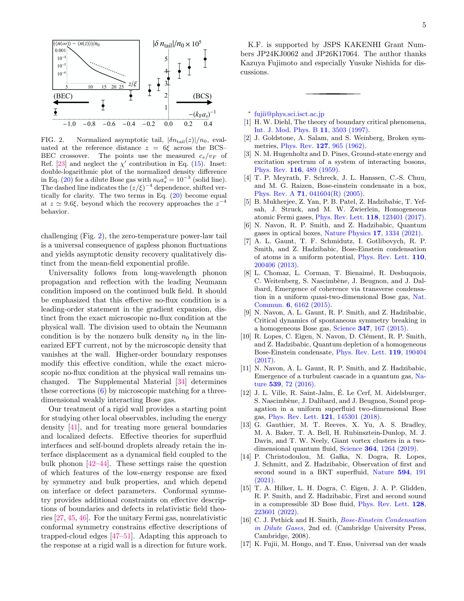
<figcaption class="paper-figure-caption"><b>Fig 4.</b> Low-resolution page preview, page 5</figcaption>
</figure>
<figure class="paper-figure-card">
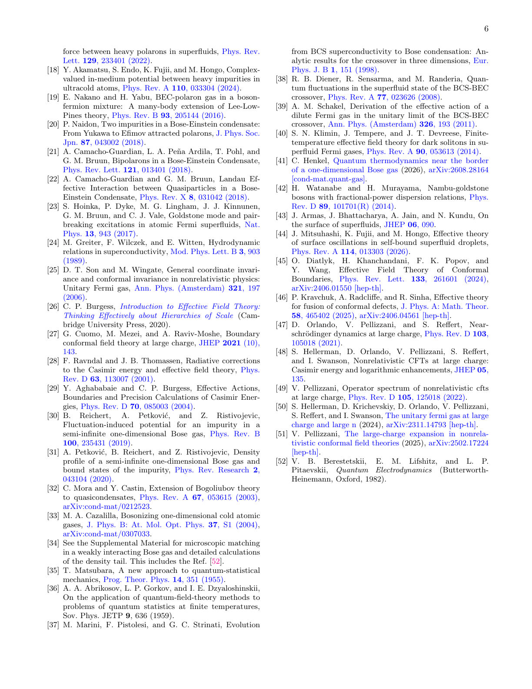
<figcaption class="paper-figure-caption"><b>Fig 5.</b> Low-resolution page preview, page 6</figcaption>
</figure>
</div>

<p><strong>Summary.</strong> This theoretical study derives the universal long-distance tail of the particle-number density near a wall in superfluids using Superfluid Effective Field Theory. It predicts a power-law decay $z^{-(d+1)}$ at zero temperature, which transitions to different forms at finite temperatures. The results are highly relevant for interpreting density profiles measured in ultracold atomic gas experiments.</p>
<p><strong>Why it may be interesting.</strong> This work provides a detailed, quantitative understanding of boundary effects in quantum fluids, which is crucial for interpreting experimental measurements in cold atom setups involving confinement or interfaces.</p>
<details>
<summary>Detailed structure</summary>
<p><strong>Main problem.</strong> The paper investigates the long-distance decay of the particle-number density profile near a static, impermeable wall in a superfluid.</p>
<p><strong>Main result.</strong> The density recovery exhibits a universal power-law tail of $z^{-(d+1)}$ at zero temperature, which crosses over to a different decay (e.g., $Tz^{-d}$ or exponential) at finite temperatures.</p>
<p><strong>Method.</strong> The analysis employs Superfluid Effective Field Theory (EFT) on a half-space, using phonon fluctuations and calculating one-loop corrections to the density expectation value.</p>
<p><strong>Model / system.</strong> The system is a $d$-dimensional Galilean-invariant superfluid, applicable to both Bose and Fermi superfluids, including strongly interacting Fermi gases at unitarity.</p>
<p><strong>Key observables.</strong> The particle-number density recovery, $\Delta n(z)/n_0$, and its asymptotic decay rate.</p>
<p><strong>Important parameters / regimes.</strong> Dimensionality ($d$), temperature ($T$), sound speed ($c_s$), and the characteristic length scale ($\xi$).</p>
<p><strong>Assumptions / limitations.</strong> The EFT is valid for distances $z$ larger than the short healing length ($\xi$), and the analysis relies on phonon fluctuation approximations.</p>
<p><strong>Figures summary.</strong> Figures schematically illustrate the crossover of the density recovery from mean-field exponential decay to phonon fluctuation contributions, showing both $z^{-(d+1)}$ and $Tz^{-d}$ regimes.</p>
<p><strong>Paper structure.</strong> The paper builds from the general EFT formulation and boundary conditions (Neumann condition) to calculating the density deviation using phonon propagators, culminating in the derivation of the universal power-law tail coefficient.</p>
</details>
<details>
<summary>Abstract</summary>
<p>We investigate the long-distance recovery of the particle-number density near a static, impermeable wall in a $d$-dimensional Galilean-invariant superfluid. Using superfluid effective field theory (EFT) on a half-space, we show that quantum phonon fluctuations produce a $z^{-(d+1)}$ tail in the smooth density profile at zero temperature, where $z$ is the distance from the wall. The tail coefficient is fixed by the bulk equation of state and is independent of microscopic wall details. At low temperature $T$, the thermal length $c_s/T$, with $c_s$ the bulk sound speed, separates the zero-temperature behavior at intermediate distances from a thermal $Tz^{-d}$ tail at larger distances for $d>1$. For $d=1$, the long-distance phonon contribution instead decays as $\exp(-4πTz/c_s)$. The EFT applies to both Bose and Fermi superfluids, including strongly interacting Fermi gases at unitarity. We estimate the normalized tail amplitude in three dimensions across the BCS--BEC crossover using experimental sound-speed data.</p>
</details>
<p><sub><a href="#top">↑ back to top</a></sub></p>

<p><a id="paper-2610.22867"></a></p>
<h3 id="chirality-resolved-imaging-of-spin-waves-with-a-quantum-spin"><a href="http://arxiv.org/abs/2610.22867v1">Chirality-resolved imaging of spin waves with a quantum spin</a></h3>
<p><strong>Authors:</strong> Enbo Zhang, Tiancheng Zheng, Bo-Yuan Yang, Shreyes Nallan, Chengchao Xu, Mark Ku, Jian-Gang Zhu<br>
<strong>Type:</strong> experiment · <strong>Category:</strong> other · <strong>PDF:</strong> <a href="https://arxiv.org/pdf/2610.22867v1">https://arxiv.org/pdf/2610.22867v1</a><br>
<strong>Analysis basis:</strong> full PDF text, analyzed in chunks
<strong>Topic relevance:</strong> <code>QC/QI experiment</code> <strong>3/5</strong> · <code>quantum measurements</code> <strong>3/5</strong> · <code>quantum optics experiment</code> <strong>1/5</strong></p>
<div class="figure-strip-hint">↔ Scroll figures horizontally</div>
<div class="paper-figures-scroll">
<figure class="paper-figure-card">
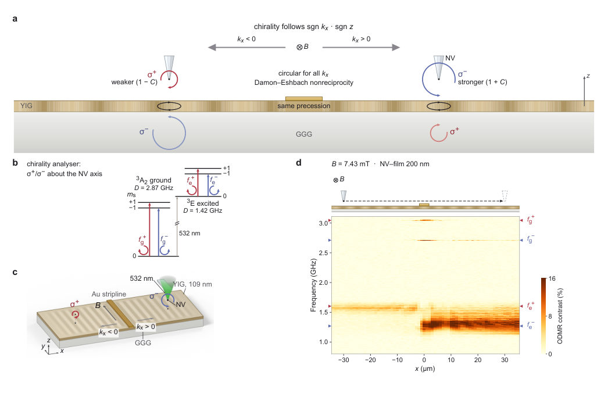
<figcaption class="paper-figure-caption"><b>Fig 1.</b> Fig. 1 | The NV centre as a chirality analyser for the Damon–Eshbach stray field. a, Cross-section viewed along +B (⊗B; x to scale, heights not). The stripline launches Damon–Eshbach surface spin waves toward −x (‘kx &lt; 0’) and +x (‘kx &gt; 0’), and the magnetization precesses in the same direction on both sides (‘same precession’, ellipses). Outside the film, the stray field of each wave is circularly polarized for every wavevector (‘circular for all kx’, equation (2)), and its chirality, the direction of rotation about B, ‘follows sgnkx · sgnz’: σ+ for kx &lt; 0 and σ−for kx &gt; 0 above the film, and the opposite below the film. Ring radii at equal precession amplitude, ‘weaker (1 −C)’ and...</figcaption>
</figure>
<figure class="paper-figure-card">
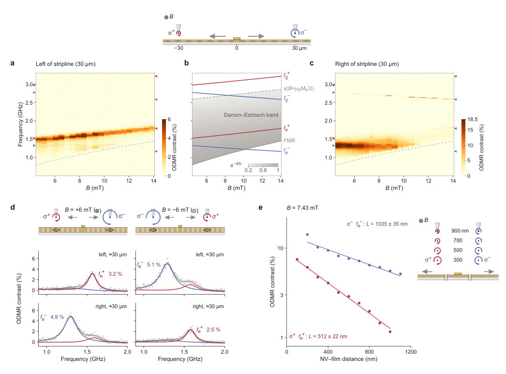
<figcaption class="paper-figure-caption"><b>Fig 2.</b> Fig. 2 | Two chirality channels left and right of the stripline, swapped by field reversal. a,c, ODMR contrast versus frequency and field, left of the stripline (a) and right of it (c), 30 µm away; NV–film 200 nm. Top, sketch of the two positions and of the stray-field chirality at each (⊗B). On the left, the σ+ channel f + e responds; on the right, the σ−channel f − e dominates (with a faint f − g ). Triangles, NV transitions. Dashed line, FMR. b, Calculated NV transitions. The shaded Damon– Eshbach band extends from the FMR (solid) to γ(B + µ0Ms/2) (dashed); the shading gives the stray-field factor e−kh at the 200 nm height of a and c (key). At low fields, both excited-state transitions...</figcaption>
</figure>
<figure class="paper-figure-card">
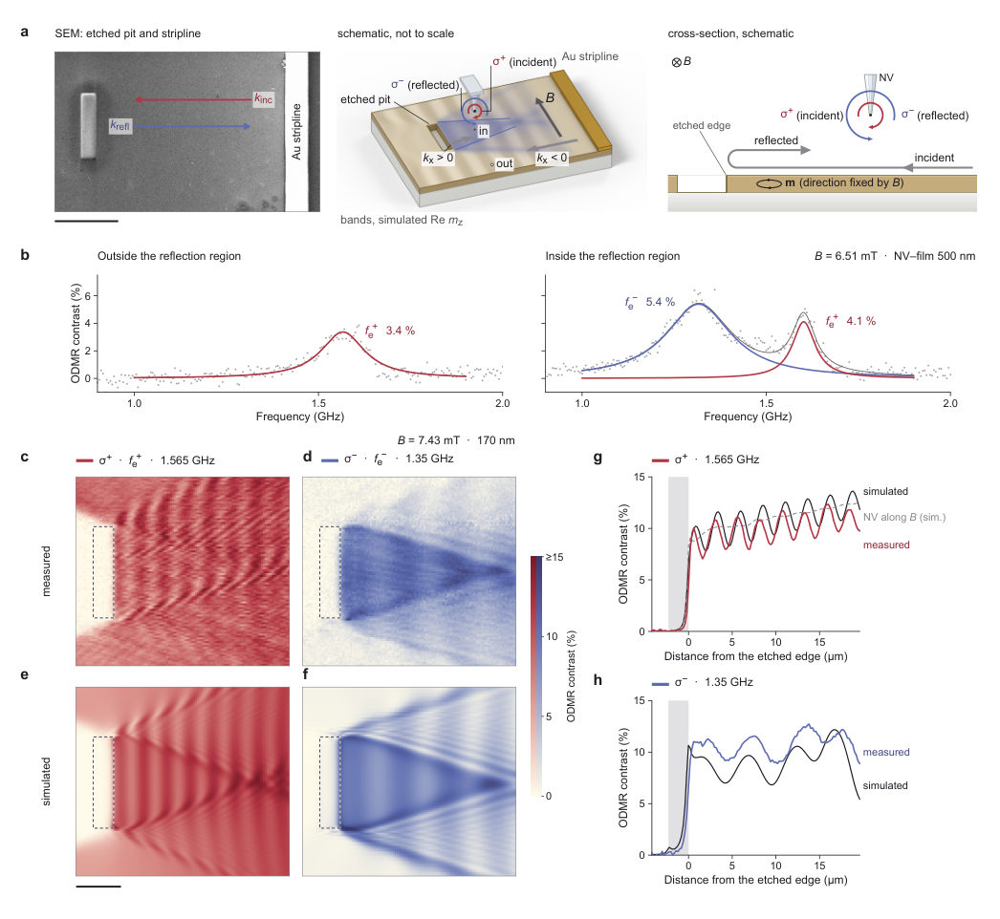
<figcaption class="paper-figure-caption"><b>Fig 3.</b> Fig. 3 | Reflection reverses the chirality: incident and reflected waves occupy separate channels at one point. a, Left, SEM image of the etched pit and stripline; middle, schematic of the spin-wave reflection and detection (not to scale); right, cross-section schematic: both waves share the precession direction, which is fixed by the bias field, so reversing kx reverses the chirality above the film. b, ODMR spectra measured outside and inside the reflection region, at the same distance from the stripline and at B = 6.51 mT. Outside, only the σ+ channel appears ( f + e ); inside, the σ−channel of the reflected wave appears as well ( f − e and f + e ), about 285 MHz apart. c,d,...</figcaption>
</figure>
<figure class="paper-figure-card">
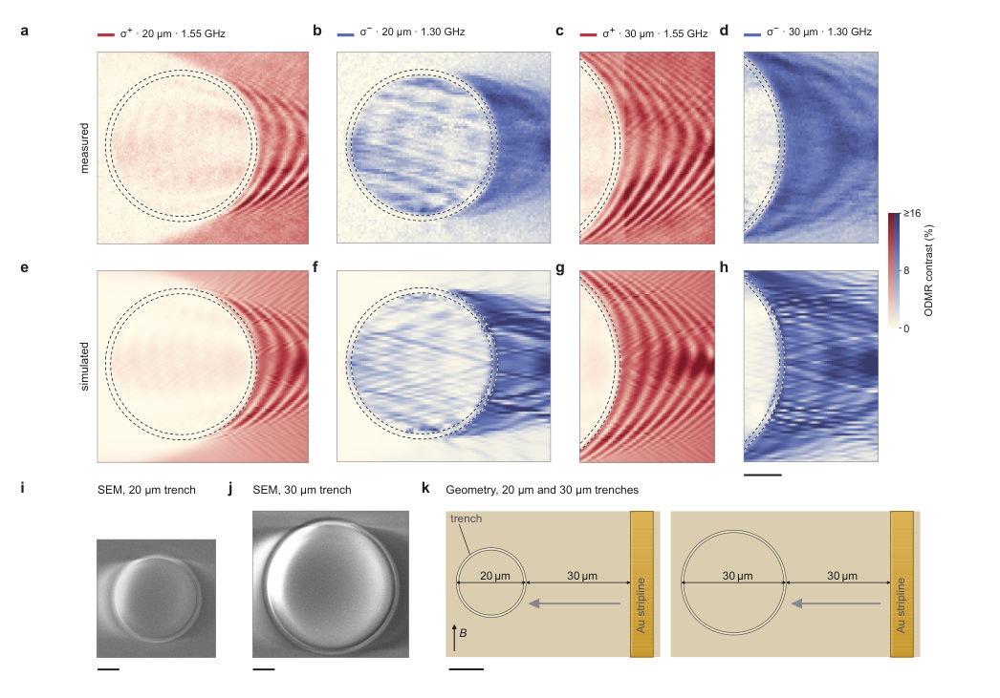
<figcaption class="paper-figure-caption"><b>Fig 4.</b> Fig. 4 | Polarization-selective imaging at circular reflectors: waves along ±x separate into the two channels, oblique waves appear in both. a–d, Measured ODMR contrast maps around circular trenches of 20 µm (a,b) and 30 µm (c,d) outer diameter, each enclosing an intact YIG disk. Dashed circles, the SEM trench outlines used in the model. The crescent on the stripline side in b,d is the reflected wave travelling toward +x, imaged in the σ−channel alone. Waves along ±x separate cleanly, one channel each, whereas obliquely reflected waves appear in both (Supplementary Note 4). e–h, Simulated maps of a–d. They reproduce the chevrons, the crescent and their channel assignment, and the presence...</figcaption>
</figure>
</div>

<p><strong>Summary.</strong> This research demonstrates a novel technique to image the chirality of spin waves using Nitrogen-Vacancy (NV) centers as intrinsic polarization analyzers. By exploiting the NV center's sensitivity to circularly polarized magnetic fields, the authors successfully distinguish between wave propagation directions and even detect the reversal of chirality upon reflection. This advances quantum sensing by providing a phase-reference-free method for characterizing chiral spin-wave dynamics.</p>
<p><strong>Why it may be interesting.</strong> This work provides a highly sensitive, non-contact quantum sensing platform for characterizing fundamental wave properties (chirality) in condensed matter systems, bridging quantum sensing with classical magnetism.</p>
<details>
<summary>Detailed structure</summary>
<p><strong>Main problem.</strong> The primary goal is to develop a method to directly image the chirality (handedness) of propagating spin waves, a property inaccessible to conventional scalar magnetometers.</p>
<p><strong>Main result.</strong> The Nitrogen-Vacancy (NV) center successfully images Damon-Eshbach waves in both propagation directions, and critically, it demonstrates that reflection reverses the wave's chirality, allowing for unambiguous direction sensing.</p>
<p><strong>Method.</strong> The study uses Optically Detected Magnetic Resonance (ODMR) scanning single-NV magnetometry above a YIG thin film to exploit the NV center's intrinsic polarization analysis capability.</p>
<p><strong>Model / system.</strong> The system involves spin waves (Damon-Eshbach surface waves) propagating in an in-plane magnetized YIG film, detected by the NV center in diamond. The NV center acts as a chiral analyzer because its transitions are sensitive to the circular polarization ($\sigma+$ vs. $\sigma-$) of the local stray magnetic field.</p>
<p><strong>Key observables.</strong> Chirality contrast ratio ($\sigma+$ vs. $\sigma-$), decay lengths ($L$), and the separation of incident and reflected wave components in distinct chiral channels.</p>
<p><strong>Important parameters / regimes.</strong> Bias field strength (e.g., $\pm 6$ mT), frequency (e.g., 1.53 and 1.31 GHz), and the geometry of the etched boundaries (pits/trenches).</p>
<p><strong>Assumptions / limitations.</strong> The method relies fundamentally on the NV center's ability to resolve circular polarization and the assumption that the spin wave dynamics are governed by established micromagnetic models.</p>
<p><strong>Figures summary.</strong> Figures illustrate the NV center's role as a chirality analyzer, showing how chirality follows $   ext{sgn}(k_x) \cdot     ext{sgn}(z)$. They demonstrate channel swapping upon field reversal and the clean separation of incident and reflected waves into distinct chiral channels.</p>
<p><strong>Paper structure.</strong> The paper logically establishes the need for chirality detection, details the NV center's mechanism as a chiral analyzer, and then presents experimental evidence through various geometries (striplines, etched pits, reflectors) to confirm chirality-resolved imaging and directionality.</p>
</details>
<details>
<summary>Abstract</summary>
<p>Spin waves carry their propagation direction in the handedness of their circularly polarized stray field, a property inaccessible to scalar magnetometers. In the Damon-Eshbach surface wave of an in-plane magnetized film, the dipolar field above the film rotates with a handedness fixed by the direction of travel. The nitrogen-vacancy (NV) centre in diamond is an intrinsic polarization analyser: a right-handed field about the NV axis drives one spin transition, and a left-handed field drives the other, in both the ground and the excited state. Here, we exploit the two excited-state transitions, which lie inside the spin-wave band of yttrium iron garnet (YIG), as a pair of chirality channels and image Damon-Eshbach waves in both directions. Because reflection from an etched boundary reverses the handedness, the incident and reflected waves appear as two lines in one spectrum and are imaged separately. In the ground state, the same rule applies, and the selected field drives Rabi oscillations, a route to chirality-selective control of the NV spin by magnons. Reading the two channels gives the direction of a spin wave at one point, without a phase reference. This advances chirality-resolved quantum sensing and provides insight into chiral spin-wave dynamics.</p>
</details>
<p><sub><a href="#top">↑ back to top</a></sub></p>

<p><a id="paper-2610.23310"></a></p>
<h3 id="fundamental-bounds-on-the-oscillation-efficiency-of-markov-networks"><a href="http://arxiv.org/abs/2610.23310v1">Fundamental Bounds on the Oscillation Efficiency of Markov Networks</a></h3>
<p><strong>Authors:</strong> Chen Jia<br>
<strong>Type:</strong> theory · <strong>Category:</strong> statistical mechanics · <strong>PDF:</strong> <a href="https://arxiv.org/pdf/2610.23310v1">https://arxiv.org/pdf/2610.23310v1</a><br>
<strong>Analysis basis:</strong> full PDF text, analyzed in chunks
<strong>Topic relevance:</strong> <code>non-equilibrium universality</code> <strong>3/5</strong> · <code>Keldysh / 2PI / non-Gaussian methods</code> <strong>1/5</strong> · <code>correlated / nonlocal dissipation</code> <strong>1/5</strong> · <code>driven-dissipative phase transition</code> <strong>1/5</strong> · <code>methods for driven-dissipative</code> <strong>1/5</strong></p>
<div class="figure-strip-hint">↔ Scroll figures horizontally</div>
<div class="paper-figures-scroll">
<figure class="paper-figure-card">
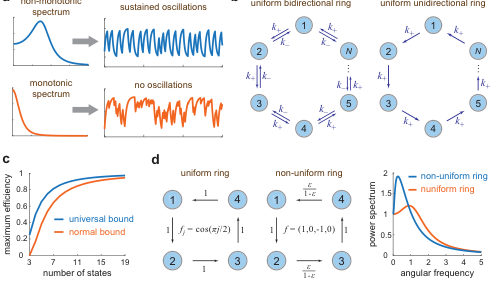
<figcaption class="paper-figure-caption"><b>Fig 1.</b> FIG. 1. Dynamic bounds on the oscillation efficiency in Markov networks. (a) Non-monotonic power spectrum serves as a characteristic signature of sustained stochastic oscillations. (b) Uniform bidirectional and unidirectional rings. (c) Comparison of the universal bound in Eq. (2) and the normal bound in Eq. (14). (d) For four-state systems, non-uniform rings may produce a larger oscillation efficiency than uniform rings. Here the power spectrum is normalized so that Gf(0) = 1. For the non-uniform ring, we choose ϵ = 0.05.</figcaption>
</figure>
<figure class="paper-figure-card">
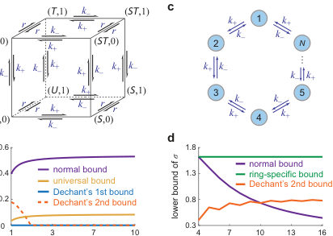
<figcaption class="paper-figure-caption"><b>Fig 2.</b> FIG. 2. Thermodynamic bounds on the oscillation efficiency in Markov networks. (a) An idealized three- site phosphorylation model inspired by KaiC. Here U denotes the state where both canonical sites are unphosphorylated, S and T denote the states where only one site is phosphorylated, and ST denotes the state where both sites are phosphorylated; in addition, 0 and 1 denote the phosphorylation state of the additional site. (b) Comparison of our universal and normal bounds with Dechant’s two bounds for the model in (a). (c) A uniform bidirectional ring. (d) Comparison of our normal and ring-specific bounds with Dechant’s second bound for the model in (c). In both (b) and (d), the parameters...</figcaption>
</figure>
</div>

<p><strong>Summary.</strong> This paper derives fundamental, universal bounds on how efficiently stochastic oscillations can occur in Markov networks. It establishes a quantitative link between the strength of spectral peaks and the minimum energy dissipation required to maintain those oscillations. These bounds are crucial for understanding the fundamental limits of non-equilibrium dynamics in complex systems.</p>
<p><strong>Why it may be interesting.</strong> The work provides rigorous, quantitative limits on non-equilibrium dynamics in open quantum systems, connecting spectral features (oscillations) directly to fundamental thermodynamic costs (dissipation).</p>
<details>
<summary>Detailed structure</summary>
<p><strong>Main problem.</strong> The paper establishes universal dynamical and thermodynamic bounds on the oscillation efficiency of Markov networks, aiming to quantify the unavoidable energetic cost of sustained stochastic oscillations.</p>
<p><strong>Main result.</strong> It derives universal bounds, such as $\eta^*_N \le \cos^2(\pi/N)$, and a thermodynamic bound relating efficiency to entropy production ($\sigma$) and relaxation speed ($\lambda_s$).</p>
<p><strong>Method.</strong> The analysis uses spectral properties of the Markov generator matrix $Q$, decomposing operators into self-adjoint and skew-adjoint parts, and employing cycle decomposition techniques.</p>
<p><strong>Model / system.</strong> The system is a finite state space Markov network, modeled by a continuous-time Markov chain with generator matrix $Q$. The analysis focuses on the dynamics governed by this matrix.</p>
<p><strong>Key observables.</strong> Oscillation efficiency ($\eta_f$), Power Spectrum ($G_f(\omega)$), Entropy Production Rate ($\sigma$), and Spectral Gap ($\lambda_s$).</p>
<p><strong>Important parameters / regimes.</strong> Network size ($N$), relaxation timescale, and the minimum stationary probability ($\pi_{min}$).</p>
<p><strong>Assumptions / limitations.</strong> The universal bound requires thermodynamic consistency for the entropy production rate to be well-defined; spectral estimates may yield zero lower bounds.</p>
<p><strong>Figures summary.</strong> Figures illustrate the characteristic non-monotonic power spectrum of oscillations and compare the derived universal, normal, and ring-specific bounds against existing spectral dissipation estimates.</p>
<p><strong>Paper structure.</strong> The paper progresses by first establishing dynamical bounds using spectral analysis, then deriving thermodynamic bounds connecting efficiency to dissipation, and finally refining these bounds using cycle decomposition methods.</p>
</details>
<details>
<summary>Abstract</summary>
<p>Stochastic oscillations are commonly identified through peaks in their power spectra, yet the fundamental limits on their strength and energetic cost remain unclear. Here we establish universal dynamical and thermodynamic bounds on oscillation efficiency in Markov networks, showing how finite state spaces constrain spectral peak enhancement. In particular, we demonstrate that networks maximizing modal coherence need not maximize oscillation efficiency. We further derive dissipation bounds that connect oscillation efficiency to the relaxation speed and stationary probabilities, revealing an unavoidable energetic cost of maintaining pronounced oscillations at a specified relaxation timescale. These bounds remain strictly positive in regimes where existing explicit spectral dissipation estimates vanish, with stronger constraints for normal networks and uniform rings. Our results distinguish spectral oscillatory strength from modal coherence and reveal how network dynamics and thermodynamic dissipation jointly limit stochastic oscillations.</p>
</details>
<p><sub><a href="#top">↑ back to top</a></sub></p>

<p><a id="paper-2610.23681"></a></p>
<h3 id="impact-of-irrep-truncations-on-quantum-simulations-of-qcd"><a href="http://arxiv.org/abs/2610.23681v1">Impact of Irrep Truncations on Quantum Simulations of QCD</a></h3>
<p><strong>Authors:</strong> Patrick Draper, Drishti Gupta<br>
<strong>Type:</strong> theory · <strong>Category:</strong> numerical methods · <strong>PDF:</strong> <a href="https://arxiv.org/pdf/2610.23681v1">https://arxiv.org/pdf/2610.23681v1</a><br>
<strong>Analysis basis:</strong> full PDF text, analyzed in chunks
<strong>Topic relevance:</strong> <code>analog quantum simulation</code> <strong>3/5</strong> · <code>methods for driven-dissipative</code> <strong>2/5</strong> · <code>Keldysh / 2PI / non-Gaussian methods</code> <strong>1/5</strong> · <code>quantum measurements</code> <strong>1/5</strong></p>
<div class="figure-strip-hint">↔ Scroll figures horizontally</div>
<div class="paper-figures-scroll">
<figure class="paper-figure-card">
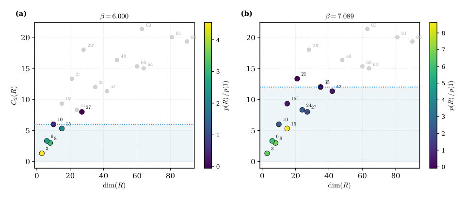
<figcaption class="paper-figure-caption"><b>Fig 1.</b> Figure 2: Active link irreps in Monte Carlo sampling of the seamed lattice at (a) β = 6.0 (g = 1) and (b) β = 7.089 (g = 0.92) for the heat kernel action at ξ = 5.0. The dots in the blue shaded region denote the irreps with character expectation values greater than 10−2 in every run of the MCMC. The characters with magnitude less than 10−2 cannot be measured reliably because the signal is overpowered by statistical noise.</figcaption>
</figure>
<figure class="paper-figure-card">
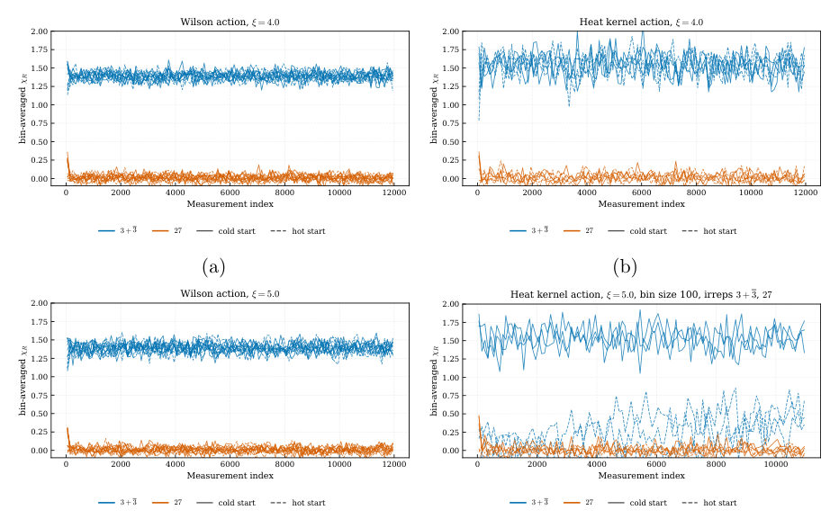
<figcaption class="paper-figure-caption"><b>Fig 2.</b> Figure 3: Each panel plots the binned averages with bin size of 100 as a function of measure- ment index for irreps 3 + ¯3 and 27 for the following cases (β = 6.0 in all cases) – (a) Wilson action with ξ = 4.0; (b) heat kernel action with ξ = 4.0; (c) Wilson action with ξ = 5.0; and (d) heat kernel action with ξ = 5.0.</figcaption>
</figure>
<figure class="paper-figure-card">
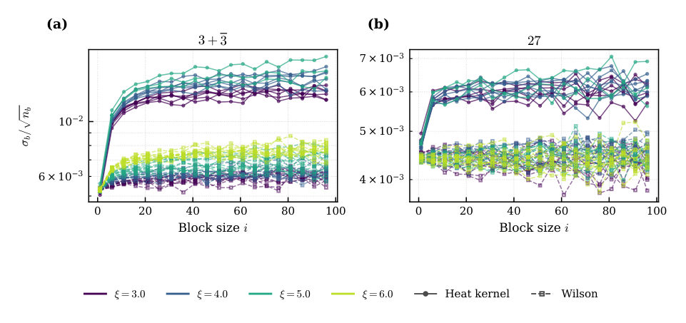
<figcaption class="paper-figure-caption"><b>Fig 3.</b> Figure 4: Jackknife errors plotted as a function of bin size plotted for ξ ≥3.0 with β = 6.0 for the Wilson and heat kernel actions for irreps 3 + ¯3 and 27.</figcaption>
</figure>
<figure class="paper-figure-card">
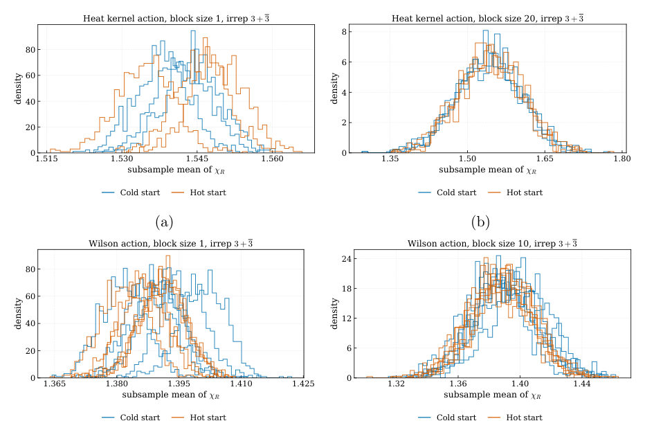
<figcaption class="paper-figure-caption"><b>Fig 4.</b> Figure 5: Mean distributions plotted for different chains of the Wilson and heat kernel actions with ξ = 4.0 and β = 6.0 for irreps 3 + ¯3 using bootstrap sampling wherein N random samples are drawn with replacement 1000 times (N is the number of elements in the original sample space) and the mean is computed for each draw. Panels (a) and (c) plot the mean distributions of the heat kernel and Wilson actions without binning, and panels (b) and (d) plot the mean distributions of said actions after binning in bin sizes of 20 and 10.</figcaption>
</figure>
<figure class="paper-figure-card">
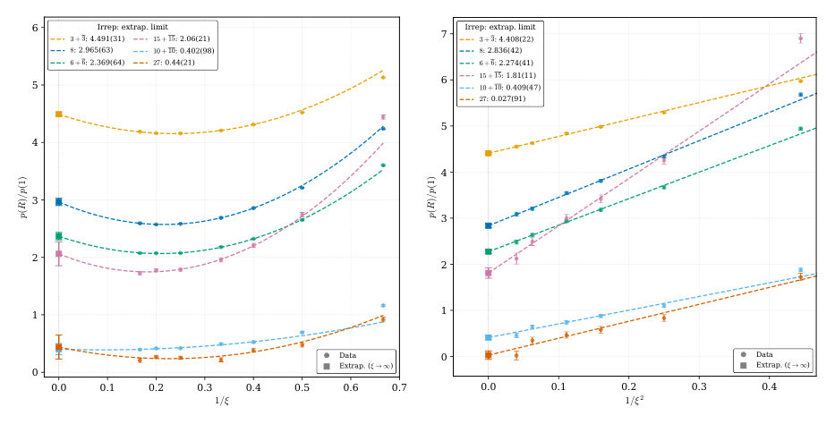
<figcaption class="paper-figure-caption"><b>Fig 5.</b> Figure 6: Relative link irrep probability measurements for (a) Wilson and (b) heat kernel actions at β = 6.0 plotted for varying anisotropies ξ and extrapolated to the Hamiltonian limit ξ →∞using (a) quadratic extrapolation with the curve a + b/ξ + c/ξ2, and (b) linear extrapolation with the curve a + b/ξ2.</figcaption>
</figure>
</div>

<p><strong>Summary.</strong> This paper investigates how to accurately simulate lattice gauge theories like QCD on quantum computers by determining the necessary basis truncations. Using Monte Carlo and perturbation theory, the authors calculate the relative probabilities of different gauge field configurations (irreps and singlets). These results directly guide the construction of efficient quantum circuits for simulating non-abelian gauge dynamics.</p>
<p><strong>Why it may be interesting.</strong> The techniques used for calculating correlation functions and determining necessary basis truncations are highly relevant to simulating complex quantum many-body systems on quantum hardware.</p>
<details>
<summary>Detailed structure</summary>
<p><strong>Main problem.</strong> The core problem is determining the necessary truncation scheme when mapping the infinite-dimensional Hilbert space of lattice gauge theories onto a finite-dimensional qubit space for quantum simulation.</p>
<p><strong>Main result.</strong> The study computes relative probabilities of link irreps and site singlets, providing quantitative data to inform the required truncation level needed to accurately capture non-abelian gauge dynamics near the continuum limit.</p>
<p><strong>Method.</strong> The authors employ Euclidean Monte Carlo methods and weak-coupling lattice perturbation theory to calculate these relative probabilities.</p>
<p><strong>Model / system.</strong> The system studied is SU(3) lattice gauge theory, analyzed using the Kogut-Susskind Hamiltonian framework.</p>
<p><strong>Key observables.</strong> Relative probabilities of link irreps ($p(R')/p(R)$) and relative probabilities of different site singlets at each vertex.</p>
<p><strong>Important parameters / regimes.</strong> Weak coupling regime ($g 	o 0$), anisotropic lattice limit ($\xi = a_s/a_t$), and the lattice spacing $a$.</p>
<p><strong>Assumptions / limitations.</strong> The primary assumption is that the gauge theory can be effectively described by an electric basis, although the effectiveness of this basis in weak coupling is questioned.</p>
<p><strong>Figures summary.</strong> Figure 1 compares the ratio of the two-point collinear correlator calculated in lattice vs. continuum PT, showing agreement at large separations ($r/a \gtrsim 10$).</p>
<p><strong>Paper structure.</strong> The work involves calculating observables (link irrep probabilities, site-singlet probabilities) using Monte Carlo methods and comparing these results against predictions from weak-coupling lattice perturbation theory.</p>
</details>
<details>
<summary>Abstract</summary>
<p>Quantum simulations of lattice gauge theories with continuous gauge groups require a choice of basis (how states of the gauge theory map to the qubit computational basis) and truncation scheme (which of the infinitely many gauge theory basis states should be omitted in the map to the finite dimensional qubit Hilbert space.) The most common choices are adapted to an electric basis for the gauge theory, where the basis states for each link are associated with irreducible representations of the gauge group. Electric bases and truncations are generally advantageous for preserving gauge symmetries and simulating the strong coupling regime, but their effectiveness in the weak coupling regimes of physical interest are less well understood. In this work, we compute relative probabilities $p(R')/p(R)$ for finding a link in the irreps $R,R'$ in the ground state of SU(3) lattice gauge theory using Euclidean Monte Carlo methods and weak-coupling lattice perturbation theory. The observables that compute these relative probabilities are constructed by introducing seams into an anisotropic lattice, and by a similar construction we are also able to measure relative probabilities of different site singlets (ways that electric flux braids together into a gauge singlet) at each vertex. With these methods we can quantify, for example, the importance of higher electric flux states in the weak coupling ground state. These results directly inform what truncations are needed to accurately capture non-abelian gauge dynamics near the continuum limit.</p>
</details>
<p><sub><a href="#top">↑ back to top</a></sub></p>

<p><a id="paper-2610.22473"></a></p>
<h3 id="anyon-bound-states-in-motemath221math-fractional-chern-insulators"><a href="http://arxiv.org/abs/2610.22473v1">Anyon bound states in MoTe$_2$ Fractional Chern Insulators</a></h3>
<p><strong>Authors:</strong> Tianhong Lu, Luiz H. Santos<br>
<strong>Type:</strong> theory · <strong>Category:</strong> strongly correlated electrons · <strong>PDF:</strong> <a href="https://arxiv.org/pdf/2610.22473v1">https://arxiv.org/pdf/2610.22473v1</a><br>
<strong>Analysis basis:</strong> full PDF text, analyzed in chunks
<strong>Topic relevance:</strong> <code>analog quantum simulation</code> <strong>3/5</strong> · <code>Keldysh / 2PI / non-Gaussian methods</code> <strong>1/5</strong> · <code>quantum measurements</code> <strong>1/5</strong></p>
<div class="figure-strip-hint">↔ Scroll figures horizontally</div>
<div class="paper-figures-scroll">
<figure class="paper-figure-card">
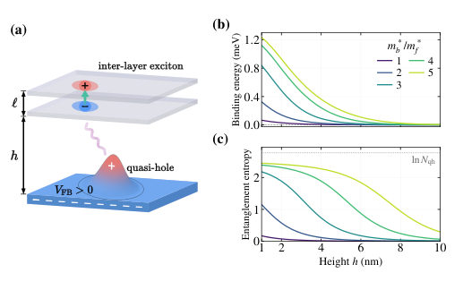
<figcaption class="paper-figure-caption"><b>Fig 1.</b> FIG. 1. Exciton-quasihole binding and entanglement. (a) Schematic of an interlayer exciton coupled to a fractional Chern insulator. The exciton’s constituent charges are separated by ℓ, and its lower charge lies at distance h above the electronic layer. The repulsive electron–exciton interaction VFB &gt; 0 effectively attracts a quasihole. (b) Binding energy versus h. (c) Fermi- Bose bipartite entanglement entropy Sfb = −Tr(ρb ln ρb) of the exciton-quasihole ground state. The dotted line marks Smax = ln Nqh, where Nqh = 16 is the number of quasihole mo- mentum sectors. Colors denote the boson-to-fermion effective- mass ratio m∗ b/m∗ f, as indicated in (b). Calculations use five fermions on a...</figcaption>
</figure>
<figure class="paper-figure-card">

<figcaption class="paper-figure-caption"><b>Fig 2.</b> FIG. 2. Spatial structure of the exciton-induced electron deple- tion D(r) in the ground state, with r measured relative to the boson position. Panels show h = 1 nm (top row) and h = 10 nm (bottom row), for mass ratios m∗ b/m∗ f = 1 (left column) and 5 (right column). The shared color scale displays AMD(r). Each parallelogram represents the 4 × 4 lattice containing five fermions and one e/3 quasihole. Crosses mark r = 0.</figcaption>
</figure>
<figure class="paper-figure-card">
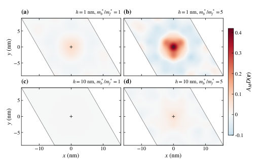
<figcaption class="paper-figure-caption"><b>Fig 3.</b> Fig. 1(b) shows EB as a function of the height h, after subtracting a uniform background that vanishes in the thermodynamic limit (see Supplemental Material[42]). At larger separations h ∼10 nm, the effective attrac- tion weakens and the binding energy decreases toward zero. Binding is also suppressed for lighter exciton ef- fective masses m∗ b, because broader exciton bandwidth increases the kinetic-energy cost of localization near the quasihole. Binding becomes stronger as two subsystems approach one another and as the boson-to-fermion ef- fective mass ratio increases, reaching approximately 1.23 meV at h = 1 nm and m∗ b/m∗ f = 5. At this mass ratio, the bandwidth of the lowest exciton...</figcaption>
</figure>
<figure class="paper-figure-card">
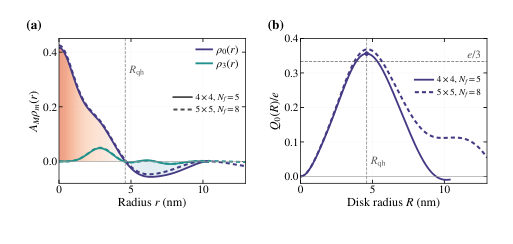
<figcaption class="paper-figure-caption"><b>Fig 4.</b> FIG. 3. Enclosed charge and angular structure of the depletion cloud. (a) Radial coefficients of the angular expansion. Here ρ0 is the angular average, and ρ3 describes the threefold, octupolar component. (b) Integrated depletion Q0(R) in a centered disk of radius R. Solid and dashed curves show the 4 × 4 and 5 × 5 systems, respectively. Shading highlights ρ0 for the 4 × 4 system, and vertical dashed line denotes its anyon core radius Rqh. Both panels use h = 1 nm and m∗ b/m∗ f = 5.</figcaption>
</figure>
<figure class="paper-figure-card">
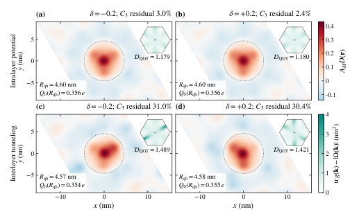
<figcaption class="paper-figure-caption"><b>Fig 5.</b> FIG. 4. Effect of moiré anisotropy on the quasihole depletion profile. D(r) for anisotropy in the fermion intralayer potential (a,b) and interlayer tunneling (c,d), with δ = −0.2 (left) and +0.2 (right). Red and blue indicate electron depletion and excess, respectively. Dotted circles mark the quasihole core boundary Rqh, defined by the maximum of the disk-enclosed depletion Q0(R). Each panel gives Rqh, Q0(Rqh), and the C3-symmetry residual within the core. Calculations use h = 1 nm, m∗ b/m∗ f = 5. Insets plot the quantum geometry in first Brillouin zone.</figcaption>
</figure>
</div>

<p><strong>Summary.</strong> This theoretical study investigates the binding of excitons to fractional quasi-holes within a moiré-engineered Fractional Chern Insulator. Using exact diagonalization, the authors characterize the binding energy and the internal spatial structure of the resulting anyon bound state. The work demonstrates how these composite systems allow for the study of fractional excitations beyond just their total charge.</p>
<p><strong>Why it may be interesting.</strong> The detailed analysis of fractional charge profiles and the coupling between excitonic degrees of freedom and topological excitations (anyons) in moiré systems provides a rich platform for studying emergent quantum phenomena relevant to strongly correlated electron physics.</p>
<details>
<summary>Detailed structure</summary>
<p><strong>Main problem.</strong> The study aims to establish conditions for robust exciton-anyon binding in moiré heterostructures and to probe the internal structure of anyons beyond their total charge.</p>
<p><strong>Main result.</strong> The authors found that strong binding occurs at small exciton-quasihole separation, and the analysis characterizes the quasihole core structure, revealing a moiré-induced octupolar profile.</p>
<p><strong>Method.</strong> The research employs exact diagonalization of a continuum-based interacting model, treating the system as a Fermi–Bose mixture.</p>
<p><strong>Model / system.</strong> The physical system is a twisted bilayer MoTe2 Fractional Chern Insulator (FCI) hosting an $e/3$ quasihole interacting with a mobile dipolar exciton (boson). The Hamiltonian models this as a Fermi-Bose mixture.</p>
<p><strong>Key observables.</strong> Binding energy ($E_B$), exciton–quasihole entanglement entropy ($S_{	ext{fb}}$), real-space charge distribution of the anyon core, and the quasihole's octupolar moment ($M_{qh}^3$).</p>
<p><strong>Important parameters / regimes.</strong> Exciton mobility ($m_b^*/m_f^*$), distance between exciton and FCI ($h$), and the moiré lattice parameters.</p>
<p><strong>Assumptions / limitations.</strong> The analysis assumes the exciton behaves as a mobile boson within the moiré potential, and calculations are performed using continuum models.</p>
<p><strong>Figures summary.</strong> Figures illustrate the binding energy and entanglement entropy dependence on separation distance, and show the spatial profile of electron depletion confirming the fractional charge.</p>
<p><strong>Paper structure.</strong> The paper progresses by establishing the theoretical model (Fermi-Bose mixture Hamiltonian), calculating key diagnostics like binding energy and entanglement, and finally characterizing the real-space charge structure and its dependence on external parameters like anisotropy.</p>
</details>
<details>
<summary>Abstract</summary>
<p>Binding anyons to optically active excitons offers a route to manipulate fractional excitations and reveal the internal spatial structure of anyons. We establish the formation of anyon bound states between a mobile dipolar exciton and an $e/3$ quasihole in a twisted bilayer MoTe$_2$ fractional Chern insulator. Using exact diagonalization of a continuum-based interacting model, we identify a regime of meV-scale binding and strong exciton-quasihole entanglement controlled by exciton mobility and the distance between the exciton and the FCI. Spatial correlations resolve a localized depletion core carrying approximately $e/3$ charge around the exciton, providing a real-space characterization of the bound state. Beyond its fractional charge, the quasihole exhibits a moiré-induced octupolar structure. Interlayer tunneling anisotropy strongly deforms this structure while leaving the enclosed charge nearly unchanged, linking the internal profile of the anyon to the underlying electronic quantum geometry. These findings establish conditions for robust exciton-anyon binding in moiré heterostructures and show how these composites provide access to properties of fractional excitations beyond their total charge.</p>
</details>
<p><sub><a href="#top">↑ back to top</a></sub></p>

<p><a id="paper-2610.23221"></a></p>
<h3 id="inducing-extraordinary-log-criticality-through-a-quantum-spin-chain"><a href="http://arxiv.org/abs/2610.23221v1">Inducing Extraordinary-log Criticality through a Quantum Spin Chain</a></h3>
<p><strong>Authors:</strong> Grigorios Makris, Francesco Parisen Toldin, Stefan Wessel<br>
<strong>Type:</strong> both · <strong>Category:</strong> statistical mechanics · <strong>PDF:</strong> <a href="https://arxiv.org/pdf/2610.23221v1">https://arxiv.org/pdf/2610.23221v1</a><br>
<strong>Analysis basis:</strong> full PDF text, analyzed in chunks
<strong>Topic relevance:</strong> <code>non-equilibrium universality</code> <strong>3/5</strong> · <code>analog quantum simulation</code> <strong>2/5</strong></p>
<div class="figure-strip-hint">↔ Scroll figures horizontally</div>
<div class="paper-figures-scroll">
<figure class="paper-figure-card">
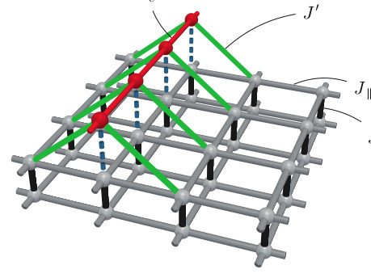
<figcaption class="paper-figure-caption"><b>Fig 1.</b> FIG. 1. Two coupling geometries between a quantum Heisenberg spin chain and a quantum critical antiferromagnetic Heisenberg bi- layer. In the first geometry, each spin in the chain (red) is coupled to two spins in the bulk (green bonds). In the second geometry, each chain spin is directly coupled only to a single bulk spin (via the blue dashed bonds).</figcaption>
</figure>
<figure class="paper-figure-card">
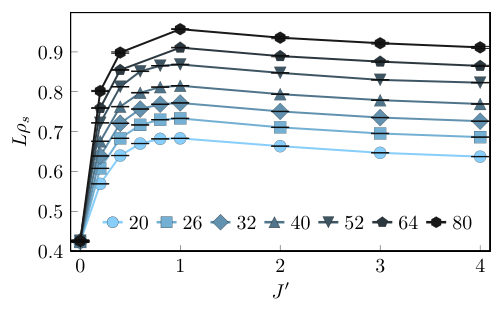
<figcaption class="paper-figure-caption"><b>Fig 2.</b> FIG. 3. Spin stiffness Lρs as a function of J′ for various linear system sizes L.</figcaption>
</figure>
<figure class="paper-figure-card">
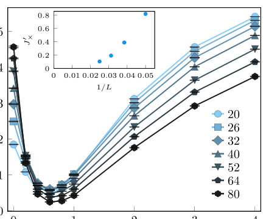
<figcaption class="paper-figure-caption"><b>Fig 3.</b> FIG. 2. Binder ratio ⟨M 4 s ⟩/⟨M 2 s ⟩2 of the staggered magnetization of the coupled spin chain as a function of J′. In the inset the estimated crossing points, J′ × of the Binder ratio for system sizes L and 2L are plotted against inverse linear system size 1/L.</figcaption>
</figure>
<figure class="paper-figure-card">

<figcaption class="paper-figure-caption"><b>Fig 4.</b> FIG. 4. Spin stiffness Lρs as a function of L for J′ = 1 on a semi- log plot (the dashed line is a guide to the eye). The logarithmic fit with respect to system size is performed for L ≥64 (full line).</figcaption>
</figure>
<figure class="paper-figure-card">

<figcaption class="paper-figure-caption"><b>Fig 5.</b> FIG. 5. Step scaling function σ(s, ¯g) for s = 2 as a function of ¯g, after subtracting the trivial linear contribution ¯g. The gray strip is obtained using the RG flow of Eq. (3) with the universal constants, including their uncertainties, taken from the classical simulations in Ref. [9, 12], α = 0.540(8) and b = −0.12(3). The green strip corresponds to truncating the RG flow at quadratic order (i.e., set- ting b = 0). Both strips tend towards 0 and approach each other as g approaches 0 (not shown). The blue points show the values of σ(s, ¯g) −¯g obtained from our simulations for the coupled quantum spin chain system.</figcaption>
</figure>
</div>

<p><strong>Summary.</strong> This paper establishes the existence of extraordinary-log criticality in a quantum spin chain coupled to a critical bulk material using advanced Quantum Monte Carlo simulations. By analyzing the spin stiffness and the renormalization group flow, the authors confirm the universal behavior predicted for this specific critical point. This work provides a rigorous quantum many-body realization of this exotic critical phenomenon.</p>
<p><strong>Why it may be interesting.</strong> The work provides concrete numerical evidence for a specific, non-trivial critical universality class (extraordinary-log) in a controllable quantum lattice model, which is highly relevant for understanding quantum phase transitions in condensed matter systems.</p>
<details>
<summary>Detailed structure</summary>
<p><strong>Main problem.</strong> The paper aims to demonstrate the emergence of 'extraordinary-log criticality' in a genuine quantum many-body system by coupling a spin chain to a critical bulk environment.</p>
<p><strong>Main result.</strong> The system exhibits extraordinary-log criticality, confirmed by the characteristic logarithmic growth of the spin stiffness and the quantitative agreement of the step-scaling function with universal predictions.</p>
<p><strong>Method.</strong> The study employs large-scale, sign-problem-free Quantum Monte Carlo (QMC) simulations and analyzes the Renormalization Group (RG) flow of the effective defect coupling.</p>
<p><strong>Model / system.</strong> The model consists of a spin-1/2 Heisenberg chain coupled to a two-dimensional quantum critical Heisenberg bilayer. The Hamiltonian describes the interactions across the coupled geometry.</p>
<p><strong>Key observables.</strong> Spin stiffness ($
ho_s$), Binder Ratio ($\langle M_s^4 
angle / \langle M_s^2 
angle^2$), and the step-scaling function $\sigma(s, ar{g})$.</p>
<p><strong>Important parameters / regimes.</strong> Coupling strengths ($J', J_c$), system size ($L$), and the RG flow parameter $\alpha$.</p>
<p><strong>Assumptions / limitations.</strong> The analysis assumes the system belongs to a single phase when tuning the coupling $J'$, and the effective low-energy description is governed by a specific RG flow equation.</p>
<p><strong>Figures summary.</strong> Figures illustrate the Binder ratio vs. coupling strength, the logarithmic growth of spin stiffness ($L
ho_s$ vs. $L$), and the step-scaling function $\sigma(s, ar{g})$ compared against universal RG flow curves.</p>
<p><strong>Paper structure.</strong> The paper systematically investigates different coupling geometries (doubly/singly connected) by calculating key observables like spin stiffness and analyzing the RG flow using step-scaling functions to confirm the predicted extraordinary-log universality class.</p>
</details>
<details>
<summary>Abstract</summary>
<p>We demonstrate the emergence of extraordinary-log criticality in a quantum many-body system by coupling a spin-$1/2$ Heisenberg chain to a two-dimensional quantum critical Heisenberg bilayer. Under the quantum-to-classical mapping, the chain acts as a plane defect in a three-dimensional critical environment for which the extraordinary-log universality class has recently been predicted. Using large-scale sign-problem-free quantum Monte Carlo simulations, we directly probe the renormalization-group flow of the effective defect coupling through the spin stiffness. We observe the characteristic logarithmic growth with linear system size $L$, corresponding to a stable weak-coupling fixed point and a running coupling $g(L)\sim 1/\log L$. Furthermore, the extracted step-scaling function quantitatively follows the universal renormalization-group flow predicted for the extraordinary-log universality class, including the leading and subleading universal coefficients. Our results establish extraordinary-log criticality in a genuine quantum many-body setting and show that its universal behavior persists despite the topological $θ$-term present in the low-energy field theory of the isolated spin chain.</p>
</details>
<p><sub><a href="#top">↑ back to top</a></sub></p>

<p><a id="paper-2610.22761"></a></p>
<h3 id="quantumness-of-entanglement-in-schwarzschild-de-sitter-spacetime"><a href="http://arxiv.org/abs/2610.22761v1">Quantumness of Entanglement in Schwarzschild de Sitter Spacetime</a></h3>
<p><strong>Authors:</strong> Sumeng Wang, Xiaofen Huang<br>
<strong>Type:</strong> theory · <strong>Category:</strong> other · <strong>PDF:</strong> <a href="https://arxiv.org/pdf/2610.22761v1">https://arxiv.org/pdf/2610.22761v1</a><br>
<strong>Analysis basis:</strong> full PDF text, analyzed in chunks
<strong>Topic relevance:</strong> <code>correlated / nonlocal dissipation</code> <strong>3/5</strong> · <code>Keldysh / 2PI / non-Gaussian methods</code> <strong>1/5</strong> · <code>methods for driven-dissipative</code> <strong>1/5</strong></p>
<div class="figure-strip-hint">↔ Scroll figures horizontally</div>
<div class="paper-figures-scroll">
<figure class="paper-figure-card">

<figcaption class="paper-figure-caption"><b>Fig 1.</b> FIG. 1. Schematic illustration of the tripartite configuration in Schwarzschild de Sitter spacetime. The upper row rep- resents the initial modes A, B, and C, while the lower row shows the redistributed modes L, A, B, C, and R after the two horizon induced transformations.</figcaption>
</figure>
<figure class="paper-figure-card">

<figcaption class="paper-figure-caption"><b>Fig 2.</b> FIG. 2. Genuine multipartite concurrence CGM of the phys- ically accessible state ρABC and the physically inaccessi- ble reduced states ρABR, ρLBC, and ρLBR as a function of x = 3M √</figcaption>
</figure>
<figure class="paper-figure-card">

<figcaption class="paper-figure-caption"><b>Fig 3.</b> FIG. 3. Genuine multipartite concurrence CGM as functions of the mixing parameter p and the spacetime parameter x = 3M √</figcaption>
</figure>
<figure class="paper-figure-card">

<figcaption class="paper-figure-caption"><b>Fig 4.</b> FIG. 4. Genuine multipartite concurrence CGM as functions of the spacetime parameter x = 3M √</figcaption>
</figure>
<figure class="paper-figure-card">

<figcaption class="paper-figure-caption"><b>Fig 5.</b> FIG. 5. Genuine multipartite concurrence CGM as a function of the dimensionless field frequency ϖ = ω/ √</figcaption>
</figure>
</div>

<p><strong>Summary.</strong> This theoretical paper analyzes entanglement and nonlocality in a quantum state within Schwarzschild-de Sitter spacetime, considering effects from both a black hole and a cosmological horizon. It finds that genuine multipartite entanglement and genuine tripartite nonlocality degrade differently under these gravitational influences and initial noise. The results highlight that entanglement can persist in certain quantum sectors even when nonlocality is lost, providing insights into the distinct robustness of these quantum resources.</p>
<p><strong>Why it may be interesting.</strong> This work is highly relevant to open quantum systems and quantum information in curved spacetime, as it quantifies how fundamental quantum correlations degrade or persist when interacting with horizons, a key topic in quantum gravity.</p>
<details>
<summary>Detailed structure</summary>
<p><strong>Main problem.</strong> The paper investigates and compares the robustness of genuine multipartite entanglement and genuine tripartite nonlocality in a noisy quantum state subjected to the gravitational effects of a black hole and a cosmological horizon in Schwarzschild-de Sitter spacetime.</p>
<p><strong>Main result.</strong> Genuine multipartite entanglement can survive in physically inaccessible quantum states even when genuine tripartite nonlocality is absent, demonstrating that the two quantum correlations have different levels of robustness under horizon effects and noise.</p>
<p><strong>Method.</strong> The analysis uses fermionic mode transformations associated with the two horizons to calculate entanglement (via concurrence) and nonlocality (via the Svetlichny parameter) for various reduced density matrices.</p>
<p><strong>Model / system.</strong> The system is a noisy generalized GHZ state evolving in Schwarzschild-de Sitter (SdS) spacetime, which features both a black hole event horizon (BEH) and a cosmological event horizon (CEH).</p>
<p><strong>Key observables.</strong> Genuine multipartite concurrence ($C_{GM}$) and the optimized Svetlichny parameter ($S_{max}$).</p>
<p><strong>Important parameters / regimes.</strong> Spacetime parameters ($x = 3M/\sqrt{\Lambda}$), noise parameter ($p$), and the Nariai limit.</p>
<p><strong>Assumptions / limitations.</strong> The analysis relies on mapping the initial state to a five-mode system and tracing over inaccessible modes to define physically accessible and inaccessible reduced states.</p>
<p><strong>Figures summary.</strong> Figures compare $S_{max}$ for the four reduced states against the Svetlichny bound, and plot parameter regions in the $x-p$ plane comparing where $C_{GM}=0$ versus $S_{max}=4$.</p>
<p><strong>Paper structure.</strong> The paper follows a structure introducing the SdS geometry, constructing the state and measures, presenting numerical analysis across different parameters, and concluding with a comparison of the two quantum correlations.</p>
</details>
<details>
<summary>Abstract</summary>
<p>We investigate genuine multipartite entanglement and genuine tripartite nonlocality of a noisy generalized GHZ state in Schwarzschild-de Sitter spacetime. The genuine multipartite concurrence and optimized Svetlichny parameter are employed to characterize these two quantum correlations. It is shown that the black hole and cosmological event horizons redistribute genuine multipartite entanglement differently among the physically accessible and inaccessible reduced states, while Svetlichny violation occurs only in the physically accessible state. We find that genuine multipartite entanglement can survive in the physically inaccessible states even when genuine tripartite nonlocality is absent. In addition, initial white noise suppresses both correlations, with Svetlichny nonlocality surviving over a narrower parameter region. Furthermore, in the Nariai limit, under the normalization adopted here, the correlations become concentrated in the physically accessible state. These results demonstrate the different robustness of genuine multipartite entanglement and genuine tripartite nonlocality under horizon effects and initial noise.</p>
</details>
<p><sub><a href="#top">↑ back to top</a></sub></p>

<p><a id="paper-2610.22614"></a></p>
<h3 id="trapping-of-nanofabricated-siomath252math-high-aspect-ratio-discs-in-an-optical-lattice"><a href="http://arxiv.org/abs/2610.22614v1">Trapping of nanofabricated SiO$_2$ high-aspect-ratio discs in an optical lattice</a></h3>
<p><strong>Authors:</strong> Shelby Klomp, Shafaq Gulzar Elahi, Scott Grudichak, Chethn Galla, Zhiyuan Wang, Mark Nguyen, George Winstone, Katarina Boskovic Guy, Emma Derrick, Maddox Wroblewski, Jacob Sprague, Andrew Laeuger, Jackson Larsen, Nancy Aggarwal, Shane L. Larson, Andrew A. Geraci<br>
<strong>Type:</strong> experiment · <strong>Category:</strong> other · <strong>PDF:</strong> <a href="https://arxiv.org/pdf/2610.22614v1">https://arxiv.org/pdf/2610.22614v1</a><br>
<strong>Analysis basis:</strong> full PDF text, analyzed in chunks
<strong>Topic relevance:</strong> <code>quantum measurements</code> <strong>3/5</strong> · <code>interference shaping light</code> <strong>1/5</strong> · <code>quantum optics experiment</code> <strong>1/5</strong></p>
<div class="figure-strip-hint">↔ Scroll figures horizontally</div>
<div class="paper-figures-scroll">
<figure class="paper-figure-card">

<figcaption class="paper-figure-caption"><b>Fig 1.</b> Figure 1. (a) SEM image of SiO2 disc with 10 µm diameter and 400 nm thickness, (b) optical microscope photo of 4 discs in the tip of a micropipette with a 30 µm opening, (c) depic- tion of a disc in a standing wave optical trap with motional coordinate system, (d) amplitude spectral density of disc in trap recorded with a fiber balanced photodetector positioned in the z direction. The dashed vertical lines correspond to predicted frequencies for the motional peaks corresponding to the transverse (x,y), librational (θx, θy), and axial (z) mo- tions.</figcaption>
</figure>
<figure class="paper-figure-card">

<figcaption class="paper-figure-caption"><b>Fig 2.</b> Figure 2. (upper) Diagram of the optical trapping apparatus consisting of a 1560 nm laser forming a dual-beam standing wave optical trap in a vacuum chamber. The motion of a disc is recorded by imaging the scattered trap light onto segmented quadrant photodiodes (QPD)s or by using a homodyne-like interference signal collected through the fiber onto a balanced detector [23]. A wave division multiplexer (WDM) allows the introduction of light at a separate wavelength which can be used for linear optical feedback cooling. (lower) Additonal SEM images of the discs. The batch used for the data shown in Fig. 3 had a diameter of 9 µm ± 1 µm. In some cases (left and middle) visible particulates have...</figcaption>
</figure>
<figure class="paper-figure-card">

<figcaption class="paper-figure-caption"><b>Fig 3.</b> Figure 3. Motional spectra representing typical discs in the optical trap. The left plots are the same particle as Fig. 1, trapped in the standing wave with 50 mW power per beam at 0.25 mbar. The right plots are an additional particle, trapped at 60 mW power per beam at 0.3 mbar. For each particle, spectra are shown for a fiber detector in the top plot and two channels of a QPD in the bottom plot.</figcaption>
</figure>
<figure class="paper-figure-card">

<figcaption class="paper-figure-caption"><b>Fig 4.</b> Figure 4. (a) Linewidth of the axial mode of the disc in Fig. 1 as a function of Pressure. Each data point represents the mean of Γ/(2π) obtained over five data-sets of 1-second each and the error bars show the standard error of the mean. The theoretical prediction is calculated according to Eq. 2 with gray band representing values of Γ/(2π) for all possible ac- commodation factors αc ∈[0,1]. (b) Frequency vs Pressure for peaks reported in Fig. 1. The frequencies of the observed peaks are independent of pressure in the 0.46-1.6 mbar range supporting the claim that they are not associated with rota- tional motion.</figcaption>
</figure>
</div>

<p><strong>Summary.</strong> This research details the successful trapping and characterization of motion for lithographically fabricated, high-aspect-ratio $\text{SiO}_2$ discs in an optical vacuum trap. By measuring the motional spectra, the authors demonstrate a robust platform for sensing, suggesting applications for next-generation detectors of high-frequency gravitational waves.</p>
<p><strong>Why it may be interesting.</strong> This work bridges nanofabrication, advanced optical trapping, and quantum sensing, directly impacting the field of optomechanics and high-precision measurement, which are core areas of AMO physics.</p>
<details>
<summary>Detailed structure</summary>
<p><strong>Main problem.</strong> The paper demonstrates the high-efficiency optical trapping and characterization of motion for nanofabricated, high-aspect-ratio $\text{SiO}_2$ discs in a vacuum environment.</p>
<p><strong>Main result.</strong> They successfully trapped single particles and measured motional spectra, showing the method's potential for highly sensitive force/acceleration sensing, particularly for gravitational wave detection.</p>
<p><strong>Method.</strong> The study combines top-down lithographic nanofabrication with optical trapping in a vacuum, characterizing motion using a combination of interferometric and imaging detection methods.</p>
<p><strong>Model / system.</strong> The physical system involves disc-shaped $\text{SiO}_2$ particles ($\approx 10 \mu\text{m}$ diameter, $400 \text{nm}$ thick) trapped by a standing wave optical lattice. Theoretical calculations use SCUFF-EM to model optical forces, while experiments measure motional spectra.</p>
<p><strong>Key observables.</strong> Motional spectra peaks corresponding to translational ($x, y, z$) and librational ($\theta_x, \theta_y$) motion, and the figure of merit for thermal noise limited sensitivity ($\eta_{\text{thermal}}$).</p>
<p><strong>Important parameters / regimes.</strong> Particle dimensions ($r \approx 4.5 \mu\text{m}$, $t = 400 \text{nm}$), trapping wavelength ($1560 \text{nm}$), and the deep Mie scattering regime ($k r \approx 20$).</p>
<p><strong>Assumptions / limitations.</strong> The analysis relies on the deep Mie regime approximation for calculating optical forces and torques.</p>
<p><strong>Figures summary.</strong> Figures show SEM images of the discs, the optical trapping apparatus setup, and amplitude spectral density plots comparing predicted motional peaks with measured spectra.</p>
<p><strong>Paper structure.</strong> The paper details the nanofabrication process, describes the optical trapping setup, presents the theoretical modeling of forces, and reports on the experimental measurement and analysis of the motional spectra.</p>
</details>
<details>
<summary>Abstract</summary>
<p>We describe the nanofabrication and loading of lithographically patterned, high aspect ratio $10$ $μ$m diameter silicon dioxide discs with thickness of $400$ nm into an optical standing wave trap in vacuum. We obtain motional spectra of the center of mass motion of the discs using a combination of interferometric and imaging methods. The method is capable of high-efficiency loading and optical trapping using small numbers of objects, of the order of a few particles, with customized geometries and sizes compatible with wafer scale nanofabrication methods. Disc-like particles in optical traps have been identified as promising candidates for detectors of high frequency gravitational waves or as sensitive accelerometers.</p>
</details>
<p><sub><a href="#top">↑ back to top</a></sub></p>

<p><a id="paper-2610.22585"></a></p>
<h3 id="bulk-defect-correspondence-in-algebraic-classical-spin-liquids"><a href="http://arxiv.org/abs/2610.22585v1">Bulk-Defect Correspondence in Algebraic Classical Spin Liquids</a></h3>
<p><strong>Authors:</strong> Rafael Flores-Calderón<br>
<strong>Type:</strong> theory · <strong>Category:</strong> statistical mechanics · <strong>PDF:</strong> <a href="https://arxiv.org/pdf/2610.22585v1">https://arxiv.org/pdf/2610.22585v1</a><br>
<strong>Analysis basis:</strong> full PDF text, analyzed in chunks
<strong>Topic relevance:</strong> <code>analog quantum simulation</code> <strong>3/5</strong> · <code>Keldysh / 2PI / non-Gaussian methods</code> <strong>1/5</strong></p>
<div class="figure-strip-hint">↔ Scroll figures horizontally</div>
<div class="paper-figures-scroll">
<figure class="paper-figure-card">

<figcaption class="paper-figure-caption"><b>Fig 1.</b> FIG. 1. Bulk–defect correspondence at rank 1 (top, kagome) and rank 2 (bottom, honeycomb snowflake). Left: pinch point around the band touching, two-fold at rank 1 and four-fold at rank 2; the winding of the constrainer on the red loop is Wbulk. Right: spin texture (arrows) around the orphan spin (filled turquoise circle) left by a vacancy cluster (open circles); the turquoise dashed lines mark the cluster of the orphan’s constrainer. On the red circle the texture winds Wdefect = Wbulk times, once at rank 1 and twice at rank 2.</figcaption>
</figure>
<figure class="paper-figure-card">

<figcaption class="paper-figure-caption"><b>Fig 2.</b> FIG. 2. Rank-1 bulk–defect correspondence in Monte Carlo (L = 48, T = 0.05J, h = 0.2J). (a,b) Reconstructed flux ¯B z around the orphan (circle); color gives its magnitude. (c) Defect winding on cir- cles of radius R; open symbols are not statistically robust. (d) Radial flux per unit ⟨nz⟩, with the SCGA (lines). Details in the SM.</figcaption>
</figure>
<figure class="paper-figure-card">

<figcaption class="paper-figure-caption"><b>Fig 3.</b> FIG. 3. Rank-2 bulk–defect correspondence in the honeycomb- snowflake model (γ = 1/2, L = 48, h = 0.2J, mO = 1). (a) Reconstructed Φz c at T = 10−4J: arrows give its phase, color its magnitude F in units of its Coulomb-window value Qeff/4π √</figcaption>
</figure>
</div>

<p><strong>Summary.</strong> This work establishes a rigorous bulk-defect correspondence in algebraic classical spin liquids, showing that a topological invariant calculated from momentum-space singularities matches the winding number measured around a physical vacancy defect. By verifying this for various lattice models, the authors demonstrate that defects serve as universal probes to characterize the emergent gauge theories governing these strongly correlated magnetic materials.</p>
<p><strong>Why it may be interesting.</strong> The concept of using local defects to probe global topological properties (like gauge fluxes) is a powerful theoretical tool applicable to understanding emergent order in complex many-body systems, relevant to quantum simulation and topological phases.</p>
<details>
<summary>Detailed structure</summary>
<p><strong>Main problem.</strong> The paper establishes a bulk-defect correspondence, linking a topological invariant (winding number) calculated in momentum space to the winding number observed in real space around a local defect (vacancy) in algebraic classical spin liquids.</p>
<p><strong>Main result.</strong> The correspondence $W_{	ext{defect}} = W_{	ext{bulk}}$ is proven and numerically verified for rank-n U(1) spin liquids, demonstrating that vacancies act as general probes for distinguishing emergent gauge theories.</p>
<p><strong>Method.</strong> The analysis uses the constrainer formalism and hybrid field theory (SCGA) to calculate topological invariants in both momentum space (pinch-point singularity) and real space (orphan spin texture).</p>
<p><strong>Model / system.</strong> The study focuses on Algebraic Classical Spin Liquids (CSL) characterized by local constraints, tested on lattices like Kagome and Checkerboard, and generalized to rank-n U(1) models.</p>
<p><strong>Key observables.</strong> Winding number ($W$), pinch-point singularity, real-space spin texture winding, enclosed gauge charge ($Q_{	ext{enc}}$), and screening lengths ($\xi$).</p>
<p><strong>Important parameters / regimes.</strong> Rank of the U(1) symmetry (rank-1 and rank-2), temperature ($T/J$), and lattice geometry (Kagome, Checkerboard, Honeycomb-snowflake).</p>
<p><strong>Assumptions / limitations.</strong> The correspondence is proven under explicit conditions, and the analysis relies on continuum field theory approximations and the SCGA framework.</p>
<p><strong>Figures summary.</strong> Figures illustrate the correspondence by comparing the momentum-space pinch point winding ($W_{	ext{bulk}}$) with the real-space spin texture winding ($W_{	ext{defect}}$) around a vacancy, showing agreement for different ranks.</p>
<p><strong>Paper structure.</strong> The paper develops the theory by defining the bulk invariant from momentum-space constraints, then introduces the defect via vacancies, derives the real-space correlation functions using Lagrange multipliers, and finally proves and verifies the equality of the topological invariants across different lattice models.</p>
</details>
<details>
<summary>Abstract</summary>
<p>Local constraints in algebraic classical spin liquids give rise to singular momentum-space correlations. This so called pinch-point singularity carries a momentum-space winding number that determines the low-energy structure of the algebraic spin liquid. We show that nonmagnetic vacancies in two dimensions reveal this topological invariant in the real-space winding of the surrounding spin textures. Under explicit conditions, we prove this bulk-defect correspondence for rank-$n$ $\mathrm{U}(1)$ spin liquids and verify it numerically for the Coulomb spin liquids of the kagome and checkerboard lattices and the rank-2 $\mathrm{U}(1)$ spin liquid of the honeycomb-snowflake model. In this way we show that vacancies can be used as general probes for distinguishing the emergent gauge theories of strongly correlated classical disordered magnets.</p>
</details>
<p><sub><a href="#top">↑ back to top</a></sub></p>

<p><a id="paper-2610.23687"></a></p>
<h3 id="finite-temperature-phase-diagram-of-dipolar-bosons-in-a-cylindrical-setup"><a href="http://arxiv.org/abs/2610.23687v1">Finite-temperature phase diagram of dipolar bosons in a cylindrical setup</a></h3>
<p><strong>Authors:</strong> Juan Sánchez-Baena, Raúl Bombín, Jordi Boronat<br>
<strong>Type:</strong> theory · <strong>Category:</strong> quantum gases · <strong>PDF:</strong> <a href="https://arxiv.org/pdf/2610.23687v1">https://arxiv.org/pdf/2610.23687v1</a><br>
<strong>Analysis basis:</strong> full PDF text, analyzed in chunks
<strong>Topic relevance:</strong> <code>analog quantum simulation</code> <strong>3/5</strong> · <code>methods for driven-dissipative</code> <strong>1/5</strong></p>
<div class="figure-strip-hint">↔ Scroll figures horizontally</div>
<div class="paper-figures-scroll">
<figure class="paper-figure-card">

<figcaption class="paper-figure-caption"><b>Fig 1.</b> FIG. 1. Representative snapshots of the supersolid (top) and superfluid (bottom) phases of the dipolar system confined in an infinite tube. The temperature is set to T = 572 nK while the scattering length values are 47.31 a0 (top) and 56.74 a0 (bottom). The simulation box of length Lx = 40r0 has been replicated to produced the plots.</figcaption>
</figure>
<figure class="paper-figure-card">

<figcaption class="paper-figure-caption"><b>Fig 2.</b> FIG. 2. Top: contrast of the x-column density (see the text) as a function of the scattering length for different values of the temperature. Bottom: superfluid fraction as a function of the scattering length for different values of the temperature. The dashed lines indicate the thresholds of C and fs for the separation between the different phases (see the text and Ta- ble I). The color code for the temperature is the same in both plots.</figcaption>
</figure>
<figure class="paper-figure-card">

<figcaption class="paper-figure-caption"><b>Fig 3.</b> FIG. 3. Phase diagram for the dipolar system in the infinite tube as a function of the scattering length, a, and tempera- ture, T. The solid (S), supersolid (SS), superfluid (SF) and normal fluid (NF) phases are labeled.</figcaption>
</figure>
<figure class="paper-figure-card">

<figcaption class="paper-figure-caption"><b>Fig 4.</b> FIG. 4. Superfluid fraction and contrast of the column density along the x-axis as a function of the temperature for a scattering length of a = 44.56 a0 (left) and a = 47.31 a0(right).</figcaption>
</figure>
</div>

<p><strong>Summary.</strong> This work uses Path Integral Monte Carlo simulations to map the finite-temperature phase diagram of dipolar bosons in a cylinder. It reveals novel physics, such as the decoupling of spatial order loss from superfluidity loss, and demonstrates non-monotonic temperature dependence in superfluidity. These findings significantly extend theoretical understanding of quantum correlations in dipolar quantum gases.</p>
<p><strong>Why it may be interesting.</strong> It provides quantitative, high-temperature results for dipolar quantum fluids, extending beyond mean-field theories and elucidating the relative thermal stability of spatial order versus superfluidity.</p>
<details>
<summary>Detailed structure</summary>
<p><strong>Main problem.</strong> To investigate the complex interplay between thermal effects and quantum correlations in dipolar bosonic systems by mapping out the finite-temperature phase diagram.</p>
<p><strong>Main result.</strong> The study reveals a regime where spatial order vanishes before superfluidity, and demonstrates a non-monotonic dependence of the superfluid fraction on temperature.</p>
<p><strong>Method.</strong> The Path Integral Monte Carlo (PIMC) method is employed to calculate thermodynamic properties, supplemented by Extended Gross-Pitaevskii simulations (eGPE) for comparison.</p>
<p><strong>Model / system.</strong> The system consists of dipolar bosons confined within an infinite cylindrical geometry. The interaction potential includes long-range dipolar terms, modeled by a Hamiltonian incorporating kinetic and dipolar interaction energy terms.</p>
<p><strong>Key observables.</strong> Superfluid fraction ($
ho_s/
ho$), structural contrast of the x-column density ($C$), and the full phase diagram mapping.</p>
<p><strong>Important parameters / regimes.</strong> Temperature ($T$) relative to the critical temperature ($T_c$), scattering length ($a$), and the fixed mean density ($
ho_{    ext{mean}}$).</p>
<p><strong>Assumptions / limitations.</strong> The PIMC method uses the fourth-order Chin's action, and the study uses an approximation of a fixed box size ($L_x = 40r_0$) due to computational constraints.</p>
<p><strong>Figures summary.</strong> Figures illustrate representative snapshots of supersolid and superfluid phases, and plot the structural contrast and superfluid fraction as functions of scattering length for various temperatures.</p>
<p><strong>Paper structure.</strong> The paper systematically maps the phase diagram by varying temperature and scattering length, defining phases (Solid, Supersolid, Superfluid, Normal) using criteria based on structural contrast ($C$) and superfluid fraction ($f_s$).</p>
</details>
<details>
<summary>Abstract</summary>
<p>Temperature plays a non-trivial role in dipolar systems, being able to either induce or destroy spatial density modulations. In order to shed light into the interplay between thermal effects and quantum correlations, we employ the path integral Monte Carlo method (PIMC) to obtain the phase diagram of a system of dipolar bosons in an infinite cylindrical geometry and at finite temperatures. For a fixed total density, we vary the scattering length of the interaction and the temperature, and characterize the structure and superfluidity of the emerging phases. The PIMC method accounts for thermal effects and quantum correlations at all orders, and can be used to quantitatively estimate the superfluid fraction of the system. Remarkably, we find a regime of parameters where, starting from a supersolid, the spatial order vanishes with temperature before the superfluidity does. We also find a region of the phase diagram where the superfluid fraction displays a non-monotonous dependence with temperature. Our results extend previous descriptions, relying on Bogoliubov theory, to larger temperatures in the thermodynamic limit and illustrate how spatial modulations and superfluidity are lost as temperature is increased.</p>
</details>
<p><sub><a href="#top">↑ back to top</a></sub></p>

<p><a id="paper-2610.22479"></a></p>
<h3 id="fractional-chern-insulators-and-composite-fermi-liquids-vs-charge-order-in-twisted-motemath285math"><a href="http://arxiv.org/abs/2610.22479v1">Fractional Chern insulators and composite Fermi liquids vs. charge order in twisted MoTe$_2$</a></h3>
<p><strong>Authors:</strong> Enrique Aguilar-Méndez, Glenn Wagner<br>
<strong>Type:</strong> theory · <strong>Category:</strong> strongly correlated electrons · <strong>PDF:</strong> <a href="https://arxiv.org/pdf/2610.22479v1">https://arxiv.org/pdf/2610.22479v1</a><br>
<strong>Analysis basis:</strong> full PDF text, analyzed in chunks
<strong>Topic relevance:</strong> <code>analog quantum simulation</code> <strong>3/5</strong> · <code>Frenkel-Kontorova</code> <strong>1/5</strong></p>
<div class="figure-strip-hint">↔ Scroll figures horizontally</div>
<div class="paper-figures-scroll">
<figure class="paper-figure-card">

<figcaption class="paper-figure-caption"><b>Fig 1.</b> FIG. 1. Single-particle bands and their Hartree-Fock renormalization. a) Moir´e bands in valley K. The two highest bands carry Chern number C = +1 and C = −1. b) Minimum direct gap ∆between the two highest bands versus twist angle θ and displacement field D. The dotted line separates the C = +1 and C = 0 region of the highest band and follows the gap closing. c) Band width W of the highest valence band versus θ and D. d)-g) Single shot Hartree- Fock bandwidth WHF relative to W at ν = −1/4, −1/3, −1/2 and −2/3, calculations were done keeping only band 0 and assuming uniform occupation of this band.</figcaption>
</figure>
<figure class="paper-figure-card">

<figcaption class="paper-figure-caption"><b>Fig 2.</b> FIG. 2. Charge order at ν = −1/4 (Ns = 16, N 1 max = 2). a) max(∆Γ+3M Sz=2 , 0) of the four-state manifold at {Γ, M1, M2, M3}, versus D and θ at ξ = 20 nm. b) same as a) but plotted versus D and ξ at θ = 3.7◦. c) Spectrum at θ = 3.3◦, D = 20 meV, ξ = 20 nm: the Sz = 2 manifold (black) is gapped by 1.7 meV within its sector. d) charge density: a 2 × 2 superlattice.</figcaption>
</figure>
<figure class="paper-figure-card">

<figcaption class="paper-figure-caption"><b>Fig 3.</b> Fig. 3 shows the ED results at ν = −1/3. The results in Fig. 3ab include band mixing with N1 max = 2 and no FCI is observed anywhere in the phase diagram. However, we note that an FCI is found at this filling with N1 max = 0 and the FCI is still present (albeit with a smaller gap) for N 1 max = 1 (see Fig. S11). The destabilizing effect of band mixing on the FCI at ν = −1/3 was first noted in Ref. [31] and is also consistent with experiments, which</figcaption>
</figure>
<figure class="paper-figure-card">

<figcaption class="paper-figure-caption"><b>Fig 4.</b> FIG. 3. Charge order at ν = −1/3 (Ns = 12, N 1 max = 2). a) ∆Γ+2K Sz=2 of the three-state manifold at {Γ, K1, K2}, versus D and θ at ξ = 20 nm. b) same as a) but plotted versus D and ξ at θ = 3.7◦. c) Spectrum at θ = 3.7◦, D = 10 meV, ξ = 20 nm: the Sz = 2 manifold (black) is gapped by 6.7 meV within its sector. d) charge density: a √</figcaption>
</figure>
<figure class="paper-figure-card">

<figcaption class="paper-figure-caption"><b>Fig 5.</b> FIG. 4. CFL versus GWC at ν = −1/2 (Ns=24, Sz = 6, N 1 max=0). a) Order score: among the 8 lowest states the number with momenta in {Γ, M1, M2, M3} minus the number with CFL momenta, plotted versus D and θ at ξ = 20 nm. A score of -8 signals a CFL, positive values signal charge order at the M points. b) same as a) but plotted versus D and ξ at θ = 3.3◦. c) Spectrum at θ = 3.3◦, D = 20 meV and ξ = 20 nm, the six lowest states lie at Γ and M (score +6). d) charge density: maxima on alternate rows of moir´e sites, a stripe.</figcaption>
</figure>
</div>

<p><strong>Summary.</strong> This theoretical study maps the complex phase diagram of twisted MoTe2, investigating the competition between topological correlated states (FCI/CFL) and charge density waves. By using advanced ED techniques that incorporate band mixing, the authors show that the stability of these exotic phases is highly sensitive to external fields and band structure details. The results provide crucial guidance for interpreting experimental measurements in moiré materials.</p>
<p><strong>Why it may be interesting.</strong> This work provides a detailed theoretical framework for understanding correlated topological phases in moiré heterostructures, which is highly relevant for realizing artificial quantum matter systems.</p>
<details>
<summary>Detailed structure</summary>
<p><strong>Main problem.</strong> The paper investigates the competition between exotic correlated phases, specifically Fractional Chern Insulators (FCIs) and Composite Fermi Liquids (CFLs), versus charge ordered states (Charge Density Waves/Wigner Crystals) in twisted MoTe2.</p>
<p><strong>Main result.</strong> The competition between these phases is highly sensitive to parameters like the displacement field and, crucially, the inclusion of band mixing, which generally destabilizes the FCI/CFL states in favor of charge order at certain fillings.</p>
<p><strong>Method.</strong> The study employs Exact Diagonalization (ED) on a continuum model Hamiltonian, supplemented by Hartree-Fock calculations to analyze the ground state properties and charge density patterns.</p>
<p><strong>Model / system.</strong> The system is twisted MoTe2 at small twist angles (around 3.7°), modeled by a continuum Hamiltonian incorporating Moiré potentials and Coulomb interactions. The analysis considers multiple fillings ($
u = -1/4, -1/3, -1/2, -2/3$) and explicitly accounts for band mixing beyond the single topmost valence band.</p>
<p><strong>Key observables.</strong> Phase identification (FCI, CFL, GWC), charge density patterns (e.g., $\sqrt{3} 	imes \sqrt{3}$ superlattice), gap size ($\Delta$), and an 'Order score' to distinguish competing ground states.</p>
<p><strong>Important parameters / regimes.</strong> Filling fraction ($
u$), displacement field ($D$), and the degree of band mixing (controlled by $N_{1	ext{max}}$).</p>
<p><strong>Assumptions / limitations.</strong> The analysis relies on ED calculations, which are computationally limited, and the necessity of including band mixing (going beyond the single-band approximation) is a key refinement over prior work.</p>
<p><strong>Figures summary.</strong> Figures illustrate the evolution of the ground state (CFL vs. GWC) across different fillings and parameters, showing characteristic charge density modulations (e.g., $\sqrt{3} 	imes \sqrt{3}$ superlattice) when charge order dominates.</p>
<p><strong>Paper structure.</strong> The paper systematically analyzes the phase diagram by varying the displacement field and filling fraction, comparing the predictions of the single-band model against the more accurate, band-mixed ED results to map out the stability regions of FCI, CFL, and charge order.</p>
</details>
<details>
<summary>Abstract</summary>
<p>The bandstructure of twisted MoTe$_2$ around 3.7$^\circ$ consists of spin-valley locked Chern bands with a bandwidth that is smaller than the interaction scale. As such, the strongly correlated phases familiar from Landau levels can be realized: Quantum Hall states, composite Fermi liquids and charge order. These states have in common that they are all favoured by strong interactions, however changing the quantum geometry and topology of the bands as well as their bandwidth via the displacement field and twist angle tilts the balance between them. We provide a comprehensive exact diagonalization analysis of the competition between these states and in particular elucidate the nature of the charge order at fillings $ν=-\frac14,-\frac13,-\frac12,-\frac23$. Furthermore, we analyze the effect of band mixing by going beyond a single band per valley. This effect of band mixing is crucial for reconciling the numerical phase diagrams with experimental observations.</p>
</details>
<p><sub><a href="#top">↑ back to top</a></sub></p>

<p><a id="paper-2610.23827"></a></p>
<h3 id="quality-of-transmission-estimation-in-quantum-networks-compute-simulate-or-learn"><a href="http://arxiv.org/abs/2610.23827v1">Quality-of-Transmission Estimation in Quantum Networks: Compute, Simulate, or Learn?</a></h3>
<p><strong>Authors:</strong> Anis Bekri, Amar Abane, Van Sy Mai, Abdella Battou, Saddek Bensalem<br>
<strong>Type:</strong> theory · <strong>Category:</strong> quantum information and computing · <strong>PDF:</strong> <a href="https://arxiv.org/pdf/2610.23827v1">https://arxiv.org/pdf/2610.23827v1</a><br>
<strong>Analysis basis:</strong> full PDF text, analyzed in chunks
<strong>Topic relevance:</strong> <code>methods for driven-dissipative</code> <strong>3/5</strong> · <code>quantum measurements</code> <strong>1/5</strong></p>
<div class="figure-strip-hint">↔ Scroll figures horizontally</div>
<div class="paper-figures-scroll">
<figure class="paper-figure-card">

<figcaption class="paper-figure-caption"><b>Fig 1.</b> Fig. 1. Entanglement distribution along a repeater path. Elementary links are generated probabilistically and then fused by Bell-state measurements at intermediate repeaters. The final end-to-end fidelity is affected not only by the elementary-link qualities, but also by swap imperfections and memory decoherence accumulated while neighboring links wait.</figcaption>
</figure>
<figure class="paper-figure-card">

<figcaption class="paper-figure-caption"><b>Fig 2.</b> Fig. 2. Decision-aware machine-learning workflow for quantum QoT estimation. The upper part shows the offline training workflow: candidate path configurations are evaluated with a quantum-network simulator to produce fidelity labels, build a QoT dataset, and train a machine- learning surrogate. The lower part shows the online decision flow: a fidelity-estimation request is mapped to analytical computation when the formula is valid and its inputs are fresh, detailed simulation when runtime allows, or the trained machine-learning surrogate when repeated simulation is too costly at decision time.</figcaption>
</figure>
<figure class="paper-figure-card">

<figcaption class="paper-figure-caption"><b>Fig 3.</b> Fig. 3. Learning the expected fidelity. a) Five-fold cross-validated error of six regressors against the per-fold-calibrated formula; tree ensembles cut the error ∼5–6×. b) Learning curve: the surrogate overtakes the formula after ∼80 configurations and keeps improving.</figcaption>
</figure>
<figure class="paper-figure-card">

<figcaption class="paper-figure-caption"><b>Fig 4.</b> Fig. 4. Generalization to unseen path regimes. Leave-one-family- out error over 270 paths (90 per family; train on two of ring/grid/backbone, test on the third) beside pooled-interpolation error; every model beats the formula on each unseen family, and extrapolation is close to interpolation.</figcaption>
</figure>
</div>

<p><strong>Summary.</strong> This work tackles the critical problem of estimating entanglement quality in quantum networks by comparing analytical, simulation, and machine learning approaches. The authors demonstrate that while simple formulas fail under decoherence, a trained ML surrogate can provide highly accurate, real-time fidelity estimates. This framework is vital for enabling robust, scalable quantum network control planes.</p>
<p><strong>Why it may be interesting.</strong> It provides a concrete, practical methodology for handling complex, time-dependent quantum channel characterization, which is crucial for scaling quantum communication networks beyond idealized models.</p>
<details>
<summary>Detailed structure</summary>
<p><strong>Main problem.</strong> The paper addresses how to optimally estimate the Quality-of-Transmission (QoT) or end-to-end fidelity in quantum networks for real-time control decisions.</p>
<p><strong>Main result.</strong> A learned surrogate model can achieve simulator-grade accuracy at formula-grade speed, effectively bridging the gap between computationally expensive simulation and inaccurate analytical approximations.</p>
<p><strong>Method.</strong> The authors propose and evaluate a compute/simulate/learn framework, training machine learning surrogates on data generated by a full quantum network simulator.</p>
<p><strong>Model / system.</strong> The system modeled is a quantum network relying on distributed entanglement, involving elementary links, entanglement swapping, and quantum memories subject to decoherence.</p>
<p><strong>Key observables.</strong> End-to-end fidelity of the delivered entangled state, which can be a point estimate or a full probability distribution.</p>
<p><strong>Important parameters / regimes.</strong> Decoherence rates, waiting times, link fidelities, and the computational cost/runtime constraints for online decision-making.</p>
<p><strong>Assumptions / limitations.</strong> The primary assumption is that the fidelity estimation task can be decomposed into regimes where analytical, simulated, or learned methods are optimal; the analogy to optical QoT is noted as incomplete.</p>
<p><strong>Figures summary.</strong> Figures illustrate the decision workflow comparing analytical, simulation, and ML approaches; one shows the learning curve where the surrogate overtakes the analytical formula, and another demonstrates generalization across different path link-length regimes.</p>
<p><strong>Paper structure.</strong> The paper establishes the problem by contrasting the limitations of analytical formulas (failing with decoherence) and full simulation (too slow). It then introduces and validates the ML surrogate approach, showing its superior performance in speed and accuracy over both alternatives for online control.</p>
</details>
<details>
<summary>Abstract</summary>
<p>Future quantum networks will rely on control-plane decisions such as routing, scheduling, entanglement provisioning, purification, and memory allocation. Each decision depends on a timely and reliable estimate of the quality of the entanglement that a candidate path can deliver, with end-to-end fidelity as a central metric. Inspired by the optical-networking experience with quality-of-transmission (QoT) estimation, this article asks when a quantum controller should compute fidelity analytically, simulate it, or learn a surrogate model. The optical analogy is useful but incomplete: optical QoT estimation often predicts a scalar transmission margin, whereas quantum QoT estimation must account for probabilistic entanglement generation, random memory waiting times, decoherence, state consumption, and measurement constraints that can make fidelity a stochastic target. We propose a compute/simulate/learn framework for quantum QoT estimation and illustrate it with a simulation-based proof of concept. Our study shows that analytical composition can be sufficient in simple regimes, that simulation becomes necessary when stochastic memory effects shape the delivered fidelity distribution, and that lightweight learned surrogates can approximate simulator labels at much lower runtime cost for online control. We close with open challenges for deployment, including stochastic targets, sim-to-real transfer, data-generation cost, physics-informed learning, and generalization beyond individual paths to full network topologies.</p>
</details>
<p><sub><a href="#top">↑ back to top</a></sub></p>

<p><a id="paper-2610.23770"></a></p>
<h3 id="scaling-of-entanglement-with-distance-between-subsystems-detection-of-phase-transitions-in-the-math294math-math295math-flux-model"><a href="http://arxiv.org/abs/2610.23770v1">Scaling of entanglement with distance between subsystems: detection of phase transitions in the $t'$-$π$-flux model</a></h3>
<p><strong>Authors:</strong> Maksim Ulybyshev, Gergő Roósz, Gabriele Bellomia, Karsten Held, Fakher Assaad, Frederic Bippus<br>
<strong>Type:</strong> theory · <strong>Category:</strong> strongly correlated electrons · <strong>PDF:</strong> <a href="https://arxiv.org/pdf/2610.23770v1">https://arxiv.org/pdf/2610.23770v1</a><br>
<strong>Analysis basis:</strong> full PDF text, analyzed in chunks
<strong>Topic relevance:</strong> <code>analog quantum simulation</code> <strong>3/5</strong></p>
<div class="figure-strip-hint">↔ Scroll figures horizontally</div>
<div class="paper-figures-scroll">
<figure class="paper-figure-card">

<figcaption class="paper-figure-caption"><b>Fig 1.</b> FIG. 1. Schematic phase diagram of the t′-π-flux Hubbard model [35]. The inset shows the Dirac-point bandstructure of the three phases and the hopping and sublattice struc- ture (triangles and squares). In the SM regime, the band- structure forms two Dirac cones; at half filling (gray shading) the Fermi surface is made up from the singular points of the two cones. Once a t′ is introduced, the cones move through momentum space until merging in the BI regime with a non- interacting bandgap opening, whereas for the antiferromag- netic MI regime, the non-interacting band-structure remains unchanged but interactions open a Mott or Slater gap. Red arrows indicate the transitions we investigate in...</figcaption>
</figure>
<figure class="paper-figure-card">

<figcaption class="paper-figure-caption"><b>Fig 2.</b> FIG. 2. Entanglement entropy between the two halves of the system. Panel (a): Entropy according to a cut in the x-direction where the subsystem is given by y &lt; L/2. Panel (b): Entropy according to a cut in the y-direction where the subsystem is given by x &lt; L/2. The inset shows the size dependence of the subleading term, at the t′ = 3 SM to BI (dashed line) transition using system sizes up to L = 1024</figcaption>
</figure>
<figure class="paper-figure-card">

<figcaption class="paper-figure-caption"><b>Fig 3.</b> FIG. 3. Fermionic negativity N F between dimer-dimer configurations as a function of distance d for the three transition types SM -BI (left); MI -BI (center); and SM -MI (right) before and after the transition. Top: each dimer only spans lattice sites of the same sublattice; bottom: each dimer couples both sublattices. Values smaller than 10−8 are indicated as zero. Insets: We measure entanglement between the hollow highlighted sites (subsystem A) and the filled highlighted sites (subsystem B). Fading indicates increasing distances of subsystem B. Squares are A-sublattice sites while triangles are B-sublattice sites. Dotted lines display a N F(d) = κ d−ϵe−d/ξ fit to the data with parameters...</figcaption>
</figure>
<figure class="paper-figure-card">

<figcaption class="paper-figure-caption"><b>Fig 4.</b> FIG. 4. Same as Fig. 3 but for the 2s configurations (see inset). Top: sites are separated with negative hopping parameters alternating with distance between −t, −t′. Bottom: sites are separated with positive hoppings alternating between t, t′</figcaption>
</figure>
<figure class="paper-figure-card">

<figcaption class="paper-figure-caption"><b>Fig 5.</b> FIG. 5. (a,b) 2s N F(t′) for the SM -BI transition for different non-zero distances (according to the color intensity bar); (c,d) ∂log(N F)/∂t′ with the inset showing ∂2 log(N F)/∂t′2. Colors encode the geometric configuration of the two sites (see insets here and in Figs. 4, 3 (d)). The horizontal bar along the x-axis indicates the regime of a non-zero spin entanglement N S. And we indicate by the vertical line the true transition as identified in Appendix A.</figcaption>
</figure>
</div>

<p><strong>Summary.</strong> This work proposes using the scaling of fermionic entanglement negativity with distance as a robust diagnostic tool to detect quantum phase transitions in strongly correlated electron models. By applying this to the $t'$-$\pi$-flux Hubbard model via QMC, the authors successfully identify three distinct transitions, demonstrating the method's utility even when direct large-scale calculations are impossible.</p>
<p><strong>Why it may be interesting.</strong> The technique provides a powerful, non-local diagnostic tool (entanglement scaling) to probe critical points in strongly correlated systems, which is highly relevant for understanding quantum materials.</p>
<details>
<summary>Detailed structure</summary>
<p><strong>Main problem.</strong> The paper addresses the challenge of detecting phase transitions in strongly correlated electron models where standard methods fail due to computational limitations.</p>
<p><strong>Main result.</strong> They demonstrate that phase transitions can be signaled by sharp signatures in the logarithmic derivatives of the fermionic negativity calculated between small, separated clusters.</p>
<p><strong>Method.</strong> The study uses auxiliary-field Quantum Monte Carlo (QMC) simulations combined with a novel diagnostic based on entanglement scaling with distance.</p>
<p><strong>Model / system.</strong> The primary model is the $t'$-$\pi$-flux Hubbard model on a square lattice, which is used to study three distinct phase transitions: SM to BI, SM to MI, and a magnetic order-disorder transition.</p>
<p><strong>Key observables.</strong> Fermionic negativity ($\mathcal{N}_F$), first- and second-order logarithmic derivatives of negativity, and entanglement entropy ($S$).</p>
<p><strong>Important parameters / regimes.</strong> The hopping parameters ($t, t'$), interaction strength ($U$), and the distance ($d$) between subsystems are key parameters.</p>
<p><strong>Assumptions / limitations.</strong> The approach assumes that the entanglement structure, specifically the negativity, is sensitive enough to reveal the underlying phase transition points even when full system-size scaling is intractable.</p>
<p><strong>Figures summary.</strong> Figure 1 schematically presents the phase diagram of the $t'$-$\pi$-flux Hubbard model, illustrating the different phases (SM, BI, MI) and the transitions between them.</p>
<p><strong>Paper structure.</strong> The paper develops a methodology to adapt entanglement detection from system-size scaling to distance scaling, applies this to the $t'$-$\pi$-flux Hubbard model using QMC, and analyzes the resulting signatures for three distinct phase transitions.</p>
</details>
<details>
<summary>Abstract</summary>
<p>The system-size scaling of bipartite entanglement can be used to detect phase transitions. We develop a related approach for strongly correlated electron models where large density matrices or large system size scaling are inaccessible. To this end, we demonstrate that phase transitions of various kinds are signaled by a sharp signature in the first- or second-order logarithmic derivatives of the negativity measuring entanglement between small clusters at varying distances. Crucially, we show how to mitigate the effect of quantum Monte Carlo noise at large distances when computing the negativity. Our focus is on the $t'$-$π$-flux Hubbard model using auxiliary-field quantum Monte Carlo simulations. It has the particular advantage of showing three distinct phase transitions in a single model: semimetal to band insulator, semimetal to antiferromagnetic Mott insulator, and a magnetic order-disorder transition belonging to the Gaussian, Gross-Neveu, and O(3) Wilson-Fisher universality classes, respectively.</p>
</details>
<p><sub><a href="#top">↑ back to top</a></sub></p>

<p><a id="paper-2610.23366"></a></p>
<h3 id="statistics-controlled-topological-phases-in-a-su-schrieffer-heeger-ladder"><a href="http://arxiv.org/abs/2610.23366v1">Statistics-controlled topological phases in a Su-Schrieffer-Heeger ladder</a></h3>
<p><strong>Authors:</strong> Rajashri Parida, Biswajit Paul, Smitha Vishveshwara, Diptiman Sen, Tapan Mishra<br>
<strong>Type:</strong> theory · <strong>Category:</strong> quantum gases · <strong>PDF:</strong> <a href="https://arxiv.org/pdf/2610.23366v1">https://arxiv.org/pdf/2610.23366v1</a><br>
<strong>Analysis basis:</strong> full PDF text, analyzed in chunks
<strong>Topic relevance:</strong> <code>analog quantum simulation</code> <strong>3/5</strong></p>
<div class="figure-strip-hint">↔ Scroll figures horizontally</div>
<div class="paper-figures-scroll">
<figure class="paper-figure-card">

<figcaption class="paper-figure-caption"><b>Fig 1.</b> FIG. 1. (a) Schematic of the two-leg SSH ladder. (b) Topo- logical bond order phase with edge modes localized on the upper leg (BO1). (c) Topological bond order phase with edge modes localized on the lower leg (BO−1). (d) Schematic of the rung insulator phase. The edge states reside on the upper (lower) leg in the BO1 (BO−1) phase. For both fermions and bosons, the rung insulator is characterized in terms of a sin- gle particle being dimerized on a single rung, and it can not move through the entire ladder except the rung in which it is trapped.</figcaption>
</figure>
<figure class="paper-figure-card">

<figcaption class="paper-figure-caption"><b>Fig 2.</b> FIG. 2. The phase diagram in the t2 −tp plane for spinless fermions and hard-core bosons in (a) and (b) respectively. The red regions denote the topological bond-ordered phases (BO1 and BO−1), whereas the blue region indicates the triv- ial rung insulator phases (R-BI and RMI). The phase bound- aries marked by the blue squares demarcate the topological- to-trivial phase transitions in both the panels. The black dashed line in (a) is the gapless boundary between the two distinct topological phases which is absent in (b).</figcaption>
</figure>
<figure class="paper-figure-card">

<figcaption class="paper-figure-caption"><b>Fig 3.</b> FIG. 3. Winding number γ/π (blue dashed) and bulk gap G (gray solid) at half-filling are plotted in (a), (b), and (d). (a) The change in winding number from one to zero indicates the topological-to-trivial phase transition of hard-core bosons driven by tp for fixed t2 = 0.3. The gap is finite for all the values of tp except at the transition point (tp ∼0.83). (b) The change in winding number from one to zero to one as a function of t2 indicates a reentrant topological phase transi- tion for hard-core bosons for fixed tp = 0.8. This behavior is complemented by the gap (G). (c) Density ρ as a function of chemical potential µ for two exemplary values of tp, with fixed t2 = 0.3, where the...</figcaption>
</figure>
<figure class="paper-figure-card">

<figcaption class="paper-figure-caption"><b>Fig 4.</b> FIG. 4. Evolution of the polarization P(τ) as a function of τ for a system with L = 100 rungs, shown at four different values of the hopping strengths, i.e., t2 = 0.1 (green squares), t2 = 0.7 (red circles), t2 = 1.2 (gray triangles), and t2 = 2 (blue diamonds). See text for the details of other system parameters. While spinless fermions show smooth pumping for all values of t2, for hard-core bosons there is a regime of values of t2 where there is no pumping at all. This shows that there is a regime of t2 for which the cycle completely remains in a trivial phase for the case of hard-core bosons.</figcaption>
</figure>
<figure class="paper-figure-card">

<figcaption class="paper-figure-caption"><b>Fig 5.</b> FIG. 5. The on-site particle density (⟨ni⟩) for different phases corresponding to Fig. 2(b) with a system consisting of L = 100 rungs. In the figures, the face color of the circles represents the values of ⟨ni⟩at 1/2 filling (N = L) for (a) tp = 0.2, t2 = 0.3, (b) tp = 0.2, t2 = 1.8, (c) tp = 2.0, t2 = 0.3. For all the plots, the value of t1 = 1.0 and only the edge sites have been shown to indicate the edge states in the system.</figcaption>
</figure>
</div>

<p><strong>Summary.</strong> This paper explores how particle statistics dictate the nature of topological phase transitions in a two-leg SSH ladder. By comparing spinless fermions and hard-core bosons, the authors find that bosons exhibit a reentrant topological transition separated by a trivial phase, whereas fermions are separated by a gapless line. This highlights the profound influence of statistics on emergent quantum phenomena.</p>
<p><strong>Why it may be interesting.</strong> This work directly addresses the fundamental role of particle statistics in determining macroscopic quantum properties like topological order, which is a key area of interest in strongly correlated quantum matter.</p>
<details>
<summary>Detailed structure</summary>
<p><strong>Main problem.</strong> The study investigates how the difference in particle statistics (spinless fermions versus hard-core bosons) affects the topological phase transition when moving from one dimension to a two-leg ladder structure.</p>
<p><strong>Main result.</strong> Hard-core bosons exhibit a reentrant topological phase transition (Topological $   o$ Trivial $    o$ Topological), while spinless fermions transition between topological phases separated by a gapless critical line.</p>
<p><strong>Method.</strong> The research employs numerical simulations like DMRG and analytical techniques, including calculating topological invariants ($\gamma$) and using Thouless Charge Pumping (TCP) to probe the bulk topology.</p>
<p><strong>Model / system.</strong> The system is a two-leg Su-Schrieffer-Heeger (SSH) ladder, modeled using Hamiltonians for spinless fermions and hard-core bosons, incorporating hopping dimerization ($t_1, t_2$) and inter-leg coupling ($t_p$).</p>
<p><strong>Key observables.</strong> Topological phase transitions, energy gap closures, quantized pumped charge ($|Q|$), and topological invariant ($\gamma$).</p>
<p><strong>Important parameters / regimes.</strong> Hopping dimerization strength ($t_1$ vs. $t_2$), inter-leg coupling strength ($t_p$), and particle statistics (fermions vs. bosons).</p>
<p><strong>Assumptions / limitations.</strong> The analysis relies on comparing results in the 2-leg ladder geometry and utilizes approximations like the Hartree-Fock method for certain limits.</p>
<p><strong>Figures summary.</strong> Figures illustrate the phase diagram in the $t_2 - t_p$ plane, comparing the topological regions for fermions and bosons, and showing the Rung Insulator phase for bosons.</p>
<p><strong>Paper structure.</strong> The paper establishes the equivalence in 1D, then analyzes the 2-leg ladder, contrasting the gapless transition for fermions with the reentrant transition mediated by a trivial phase for bosons, using pumping measurements to confirm the statistical difference.</p>
</details>
<details>
<summary>Abstract</summary>
<p>In strictly one-dimensional lattices, free fermions and hard-core bosons exhibit equivalent physical properties in many-particle systems. However, this statistical equivalence generally breaks down upon moving to higher dimensions. Our work investigates the significant effects of this difference on the topological phase transition in a minimal system lying away from one dimension: the two-leg Su-Schrieffer-Heeger (SSH) ladder. Starting in the limit of two decoupled SSH chains having opposite hopping dimerization patterns (staggered dimerization), we demonstrate that introducing inter-leg coupling drives a transition from a topological to a trivial phase for both spinless fermions and hard-core bosons. However, the topological to trivial phase transition boundary is strongly sensitive to the underlying particle statistics. We find that this intriguing effect favors a trivial phase sandwiched between the two topological phases with opposite characters for the case of hard-core bosons, resulting in a reentrant topological phase transition. In contrast, this reentrant phenomenon is absent for spinless fermions, with the topological phases being separated by a gapless line instead of an intervening trivial phase. This study demonstrates the interplay between particle statistics and topological features, revealing fundamentally different properties in an experimentally accessible set-up.</p>
</details>
<p><sub><a href="#top">↑ back to top</a></sub></p>
<hr>
<p>
<a href="index.html">← Index</a>
 · <a href="papers_01.html">← Previous</a> · <a href="papers_03.html">Next →</a>
</p>
<hr>

</body>
</html>
